← 回股市觀察
盤中觀察 每日盤中觀察
2026/11/13 12:31 即時快照 · 當日盤中成交金額前 50 檔（上市 35＋上櫃 15）· 公開資料整理
→ 看當日逐檔技術線型分析（全檔） 歷次逐檔分析
43,917.72
加權指數 +825.85 點（+1.92%）
這是盤中快照，不是收盤結果。資料時間 2026-11-13 12:31:07（TWSE MIS 即時行情，上市／上櫃皆 delay=0）。
13:30 收盤（含最後一盤集合競價）會再變動；量能是以「已過交易時間比例」推估（尾盤大量時會低估）；
技術面標籤是把盤中現價代入原本以收盤價設計的規則（日線歷史只到前一交易日 9/14）。
統計範圍：候選池＝20261112 與 20261111 收盤成交值前段（上市 250／上櫃 130）取聯集，共 417 檔；再以今日盤中累計成交金額排序取
上市前 35＋上櫃前 15。漲跌家數是候選池內的數字，不是全市場（即時全市場家數證交所沒有開放端點）。
本頁為公開資料的整理與觀察，不構成投資建議，不報牌、不預測、不下買賣決策。
時程紀錄（本日盤中分析）▾ 點擊展開▴ 點擊收合
| 階段 | 時間 |
|---|
| 任務開始 | 由排程自動觸發（週一～週五 12:30） |
| 分析腳本執行 | 12:30:26 → 12:31:07（40.8 秒） |
| 資料快照時間 | 2026-11-13 12:31:07（行情時間戳 12:30:57） |
| 本頁產出 | 見頁尾版本時間 |
逐階段 log：
| 12:30:26 | START 盤中分析開始 |
| 12:30:26 | ① 抓即時指數（tse_t00 / otc_o00） |
| 12:30:27 | ② 建立候選池（20261112 與 20261111 成交值前段，上市＋上櫃） |
| 12:30:27 | 候選池共 418 檔 |
| 12:30:27 | ③ 抓即時候選池行情 |
| 12:31:06 | 取得即時報價 417 檔 |
| 12:31:06 | 候選池漲跌：漲 324／跌 82／平盤 11（快照時間 12:30:57） |
| 12:31:06 | ④ 選出 70 檔（上市 50＋上櫃 20），門檻 16.52 億 |
| 12:31:06 | ⑤ 抓日線歷史並算技術面 |
| 12:31:07 | ⑥ 產出（70 檔） |
K 線圖怎麼看：每一檔都附 K 線圖 —— 黃圈是轉折低點、粉圈是轉折高點（
虛線圈代表還沒確認的轉折）、藍線是月線（20 日均線）；頸線取最近兩個轉折低點之間的最高轉折高點，
突破頸線才會標示。
圖上另有兩條水平虛線、左側標數值：高點頸線（紅，最近兩個轉折低點之間的最高轉折高點）與低點頸線（綠，最近兩個轉折高點之間的最低轉折低點）；樣本不足就不畫。
紅色 K 棒＝收盤高於開盤、綠色＝收盤低於開盤。
大盤趨勢快篩（加權指數）（盤中近似） 資料日 2026/11/12・來源：證交所公開資料
主狀態：跌破月線
前一交易日對照（11/11）：跌破月線（量比 20 0.89） → 今日跌破月線（量比 20 1.08）
指標、數值、判定（點開看 12 項明細：均線位置／排列、月線方向、頸線、轉折結構、位階、量價…）
加權指數11/12 收盤跌 1,165.28 點（-2.63%），收 43,091.87、跌破月線 44,881.94；月線還在下彎，MA20 這條短均還沒收復，離高點頸線 47,372.65 還差 9.04%。
- 均線位置：4 條均線站上 2 條；沒站上的是 MA20 44,881.94（收盤比它低 3.99%）、MA60 46,250.79（收盤比它低 6.83%）
- 月線方向：月線 MA20 現在 44,881.94，比 5 個交易日前低 1,758.07 點 → 下彎
- 量能：集中市場成交 10,568.4 億，跟 5 日均量差不多（1.02 倍）、比 20 日均量大一些（1.08 倍）
- 關鍵價位：高點頸線 47,372.65，還差 9.04%；低點頸線 38,610.95，還在下方 11.61%
- 大小型股：加權 -2.63%、櫃買 -2.44%，兩邊同向
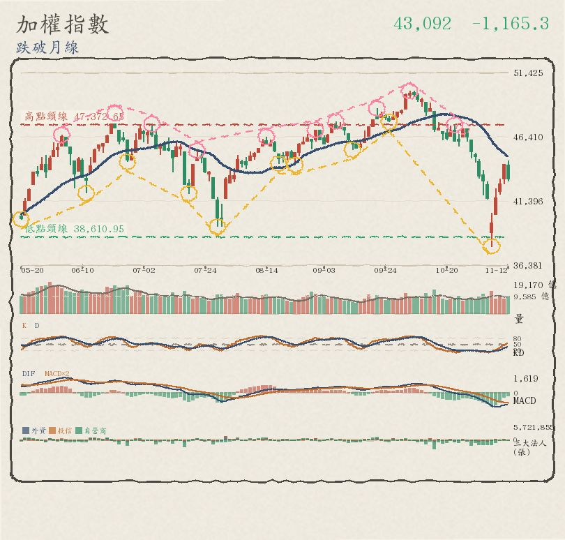
圖說：加權指數日 K（與個股圖相同標記）：黃圈＝轉折低點、粉圈＝轉折高點、虛線小圈＝還沒確認的轉折、藍線＝月線 MA20、水平虛線＝高點／低點頸線。最後一根是資料日當天。
本區塊為公開資料的技術面觀察，不構成投資建議，
不報牌、不預測、不下買賣決策。成交金額為集中市場總成交金額（含 ETF／權證），
與頁首摘要的「上市個股成交金額」口徑不同。標籤是統計，不是評分、也不是推薦。
上市 vs 上櫃（同期快篩）
加權 -2.63% vs 櫃買 -2.44%（同向） → 同向
（兩個市場分開寫，不合併成一個數字；櫃買為 TPEX 公開資料）
櫃買歷史：TPEX 逐日回補 130 根；來源：櫃買中心 www/zh-tw/indexInfo/sectinx（逐日，官方；OpenAPI tpex_index 只回當月）
（TPEX OpenAPI 只回當月，故逐日回補；歷史不足就不算該條均線並標「資料不足」，不用錯數字）
近 20 個交易日大盤狀態回溯（最新在上）（點開看逐日主狀態／量比／量價象限）
用同一支程式回算最近 20 個交易日（主狀態 S1~S8 與量比 20 皆為當日收盤當時的判定，
不是事後調整）；量比 20 未公布的日子寫「—」。
好條件最多的（前 10）
不好條件最多的（前 10）
好條件（7 項）：站上月線、月線向上、底底高、頭頭高、突破頸線、攻擊量（量增＋上漲）、守住今日高檔（距今日高點 1% 內）。
不好條件（7 項）：跌破前低、今日下跌、相對大盤弱、在月線之下、貼近今日低點（1% 內）、跌破昨日低點、月線下彎。
兩邊都是同一組日線資料＋盤中即時價算出來的「符合項目數」，只是把方向相反的條件分開數；
條件數不是評分或推薦，不構成投資建議。
盤中爆量（估量比 ≥ 1.5）（25 上市 13／上櫃 12）
今日疲弱（跌幅前 10）（10 上市 7／上櫃 3）
逐檔（70 檔，依盤中成交金額排序）
台積電 2330 上市
2365 +25.0（+1.07%）
區間或轉弱 盤中成交值 468.1 億・全榜第 1 名（上市第 1 名）・相對大盤 -0.85
好條件 1/7：站上月線
不好條件 2/7：相對大盤弱、月線下彎

12:31 盤中 2365（+1.07%），比加權指數弱 0.85 個百分點、站上月線 2350，離高點頸線 2413.75 還差 2.0%，轉折還沒走出明顯方向。
- 月線位置：現價 2365 在月線 2350 之上（+0.6%）；5 日線 2278 也在月線之下（短均在下）；月線向下
- 量能：以已過交易時間推估，今天成交量約是 20 日均量的 0.74 倍（量平），比 20 日均量少很多；上漲但量縮，量價背離
- 關鍵價位：高點頸線 2413.75 還沒突破，差 2.0%；前一交易日高點 2395（低於 1.3%）；今天盤中高點 2390（低於 1.0%）；今天盤中低點 2340（高於 1.1%）
- 轉折結構：低點 2375、2375、2020 與高點 2510、2590、2435 都沒有明顯遞增，屬於區間震盪或轉弱；還沒確認的轉折低點 11-04 2235、11-06 2020；還沒確認的轉折高點 11-11 2395、11-12 2395（圖上虛線小圈）
聯發科 2454 上市
4205 +355.0（+9.22%）
區間或轉弱 盤中成交值 456.71 億・全榜第 2 名（上市第 2 名）・相對大盤 +7.30
好條件 4/7：站上月線、突破頸線、攻擊量（量增＋上漲）、守住今日高檔（距今日高點 1% 內）
不好條件 1/7：月線下彎
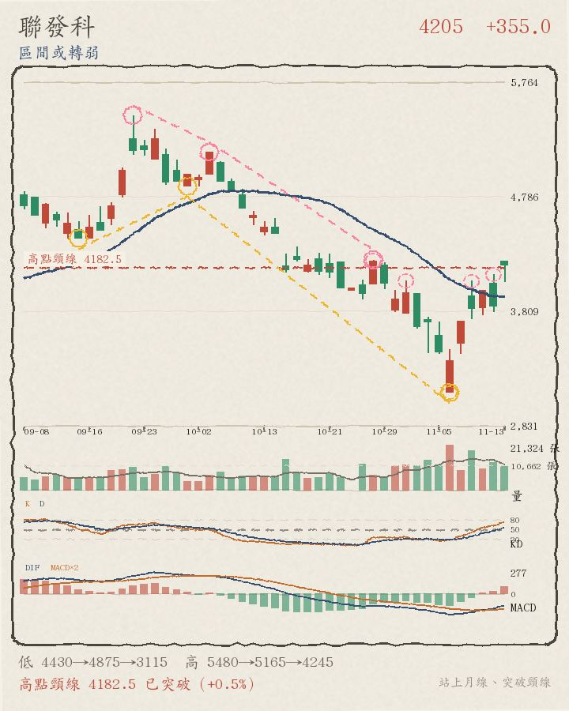
12:31 盤中 4205（+9.22%），比加權指數強 7.30 個百分點、站上月線 3934.5，已突破高點頸線 4182.5，轉折還沒走出明顯方向。
- 月線位置：現價 4205 在月線 3934.5 之上（+6.9%）；5 日線 3757 也在月線之下（短均在下）；月線向下
- 量能：以已過交易時間推估，今天成交量約是 20 日均量的 1.33 倍（量增），比 20 日均量大不少；上漲又量增，量價配合
- 關鍵價位：高點頸線 4182.5 已站上；前一交易日高點 4120（高於 2.1%）；今天盤中高點 4235（低於 0.7%）；今天盤中低點 4060（高於 3.6%）
- 轉折結構：低點 4430、4875、3115 與高點 5480、5165、4245 都沒有明顯遞增，屬於區間震盪或轉弱；還沒確認的轉折低點 11-06 3115；還沒確認的轉折高點 11-10 4065、11-12 4120（圖上虛線小圈）
台玻 1802 上市
87.4 +5.7（+6.98%）
高點墊高、底部不穩 盤中成交值 322.64 億・全榜第 3 名（上市第 3 名）・相對大盤 +5.06
好條件 6/7：站上月線、月線向上、頭頭高、突破頸線、攻擊量（量增＋上漲）、守住今日高檔（距今日高點 1% 內）
不好條件 0/7：無
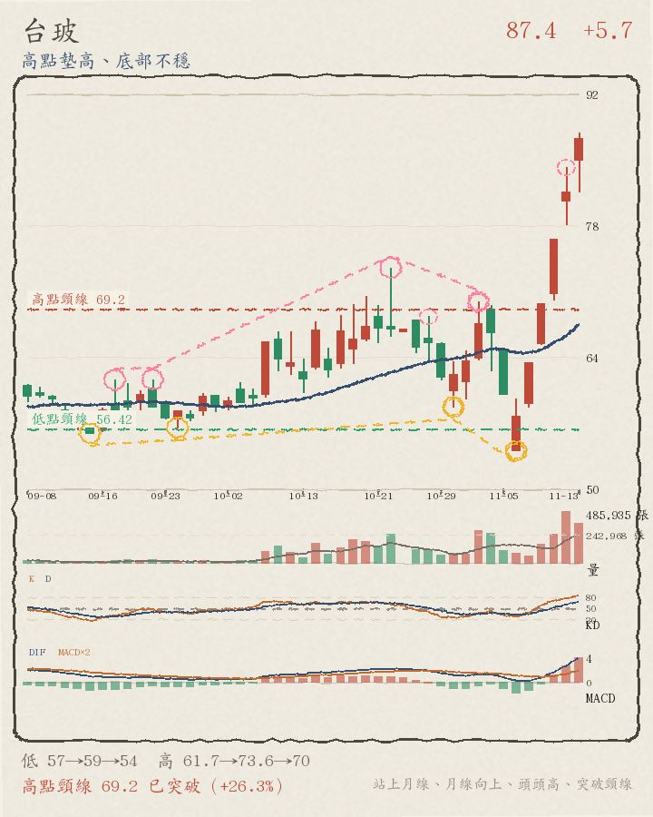
12:31 盤中 87.4（+6.98%），比加權指數強 5.06 個百分點、站上月線 66.36，已突破高點頸線 69.2，高點還在墊高（但底部沒同步墊高）。
- 月線位置：現價 87.4 在月線 66.36 之上（+31.7%）；5 日線 69.9 也在月線之上（短均在上）；月線向上
- 量能：以已過交易時間推估，今天成交量約是 20 日均量的 2.99 倍（爆量），比 20 日均量大不少；上漲又量增，量價配合
- 關鍵價位：高點頸線 69.2 已站上；前一交易日高點 84.3（高於 3.7%）；今天盤中高點 88（低於 0.7%）；今天盤中低點 81.7（高於 7.0%）
- 轉折結構：高點 61.7、73.6、70 墊高（頭頭高），但低點 56.6、58.8、54.1 沒有同步墊高；還沒確認的轉折低點 10-30 58.8、11-06 54.1；還沒確認的轉折高點 11-03 70、11-12 84.3（圖上虛線小圈）
南亞 1303 上市
306.5 +13.5（+4.61%）
高點墊高、底部不穩 盤中成交值 266.41 億・全榜第 4 名（上市第 4 名）・相對大盤 +2.69
好條件 2/7：站上月線、頭頭高
不好條件 1/7：月線下彎
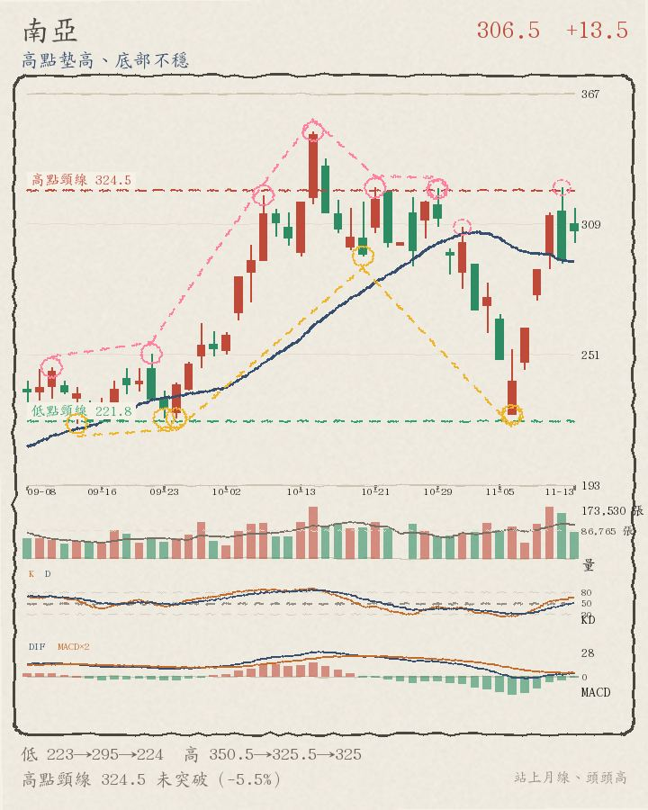
12:31 盤中 306.5（+4.61%），比加權指數強 2.69 個百分點、站上月線 293.15，離高點頸線 324.5 還差 5.5%，高點還在墊高（但底部沒同步墊高）。
- 月線位置：現價 306.5 在月線 293.15 之上（+4.5%）；5 日線 279.5 也在月線之下（短均在下）；月線向下
- 量能：以已過交易時間推估，今天成交量約是 20 日均量的 1.06 倍（量平），比 20 日均量大一些
- 關鍵價位：高點頸線 324.5 還沒突破，差 5.5%；前一交易日高點 325.5（低於 5.8%）；今天盤中高點 316.5（低於 3.2%）；今天盤中低點 301（高於 1.8%）
- 轉折結構：高點 350.5、325.5、325 墊高（頭頭高），但低點 223、295、224.5 沒有同步墊高；還沒確認的轉折低點 11-06 224.5；還沒確認的轉折高點 11-02 308、11-12 325.5（圖上虛線小圈）
欣興 3037 上市
803 +11.0（+1.39%）
區間或轉弱 盤中成交值 180.57 億・全榜第 5 名（上市第 5 名）・相對大盤 -0.53
好條件 1/7：攻擊量（量增＋上漲）
不好條件 3/7：相對大盤弱、在月線之下、月線下彎
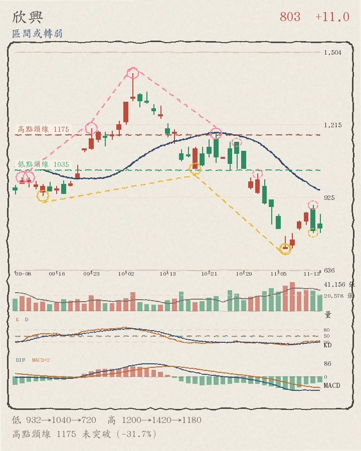
12:31 盤中 803（+1.39%），比加權指數弱 0.53 個百分點、跌破月線 967.7，離高點頸線 1175 還差 31.7%，轉折還沒走出明顯方向。
- 月線位置：現價 803 在月線 967.7 之下（-17.0%）；5 日線 793.6 也在月線之下（短均在下）；月線向下
- 量能：以已過交易時間推估，今天成交量約是 20 日均量的 1.21 倍（量增），比 20 日均量大不少；上漲又量增，量價配合
- 關鍵價位：高點頸線 1175 還沒突破，差 31.7%；前一交易日高點 894（低於 10.2%）；今天盤中高點 859（低於 6.5%）；今天盤中低點 784（高於 2.4%）
- 轉折結構：低點 932、1040、720 與高點 1200、1420、1180 都沒有明顯遞增，屬於區間震盪或轉弱；還沒確認的轉折低點 11-06 720、11-12 785；還沒確認的轉折高點 11-02 1020、11-12 894（圖上虛線小圈）
量增
↑ 回上方清單
創意 3443 上市
8645 +785.0（+9.99%）
高點墊高、底部不穩 盤中成交值 167.28 億・全榜第 6 名（上市第 6 名）・相對大盤 +8.07
好條件 3/7：站上月線、頭頭高、突破頸線
不好條件 1/7：月線下彎
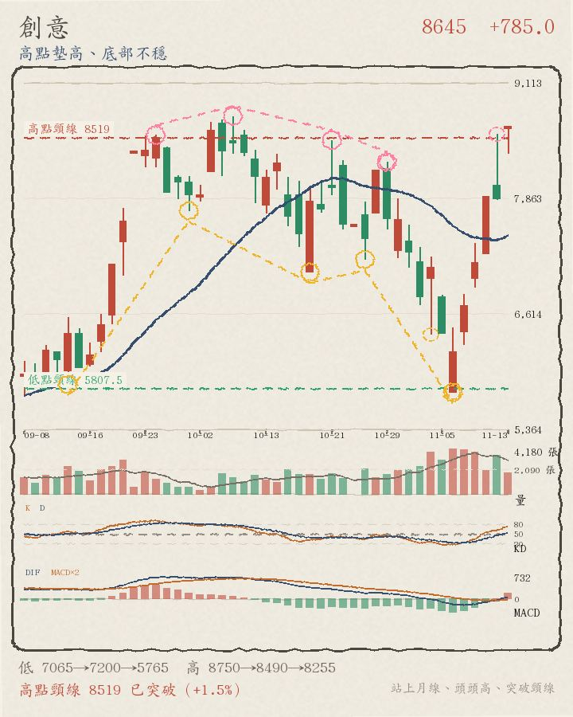
12:31 盤中 8645（+9.99%），比加權指數強 8.07 個百分點、站上月線 7409.75，已突破高點頸線 8519，高點還在墊高（但底部沒同步墊高）。
- 月線位置：現價 8645 在月線 7409.75 之上（+16.7%）；5 日線 7165 也在月線之下（短均在下）；月線向下
- 量能：以已過交易時間推估，今天成交量約是 20 日均量的 1.04 倍（量平），跟 20 日均量差不多
- 關鍵價位：高點頸線 8519 已站上；前一交易日高點 8555（高於 1.1%）；今天盤中高點 8645（高於 0.0%）；今天盤中低點 8350（高於 3.5%）
- 轉折結構：高點 8750、8490、8255 墊高（頭頭高），但低點 7065、7200、5765 沒有同步墊高；還沒確認的轉折低點 11-04 6390、11-06 5765；還沒確認的轉折高點 10-29 8255、11-12 8555（圖上虛線小圈）
富喬 1815 上櫃
144 +7.0（+5.11%）
高點墊高、底部不穩 盤中成交值 160.02 億・全榜第 7 名（上櫃第 1 名）・相對大盤 +3.19
好條件 3/7：站上月線、頭頭高、攻擊量（量增＋上漲）
不好條件 1/7：月線下彎
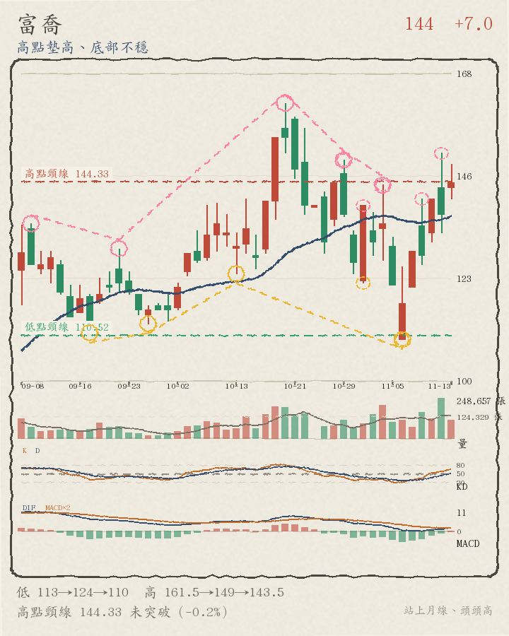
12:31 盤中 144（+5.11%），比加權指數強 3.19 個百分點、站上月線 135.875，離高點頸線 144.33 還差 0.2%，高點還在墊高（但底部沒同步墊高）。
- 月線位置：現價 144 在月線 135.875 之上（+6.0%）；5 日線 130.4 也在月線之下（短均在下）；月線向下
- 量能：以已過交易時間推估，今天成交量約是 20 日均量的 1.16 倍（量增），比 20 日均量大不少；上漲又量增，量價配合
- 關鍵價位：高點頸線 144.33 還沒突破，差 0.2%；前一交易日高點 150.5（低於 4.3%）；今天盤中高點 148（低於 2.7%）；今天盤中低點 140.5（高於 2.5%）
- 轉折結構：高點 161.5、149、143.5 墊高（頭頭高），但低點 113、124、109.5 沒有同步墊高；還沒確認的轉折低點 11-02 122、11-06 109.5；還沒確認的轉折高點 11-10 140.5、11-12 150.5（圖上虛線小圈）
南亞科 2408 上市
382 +2.5（+0.66%）
區間或轉弱 盤中成交值 153.91 億・全榜第 8 名（上市第 7 名）・相對大盤 -1.26
好條件 0/7：無
不好條件 3/7：相對大盤弱、在月線之下、月線下彎
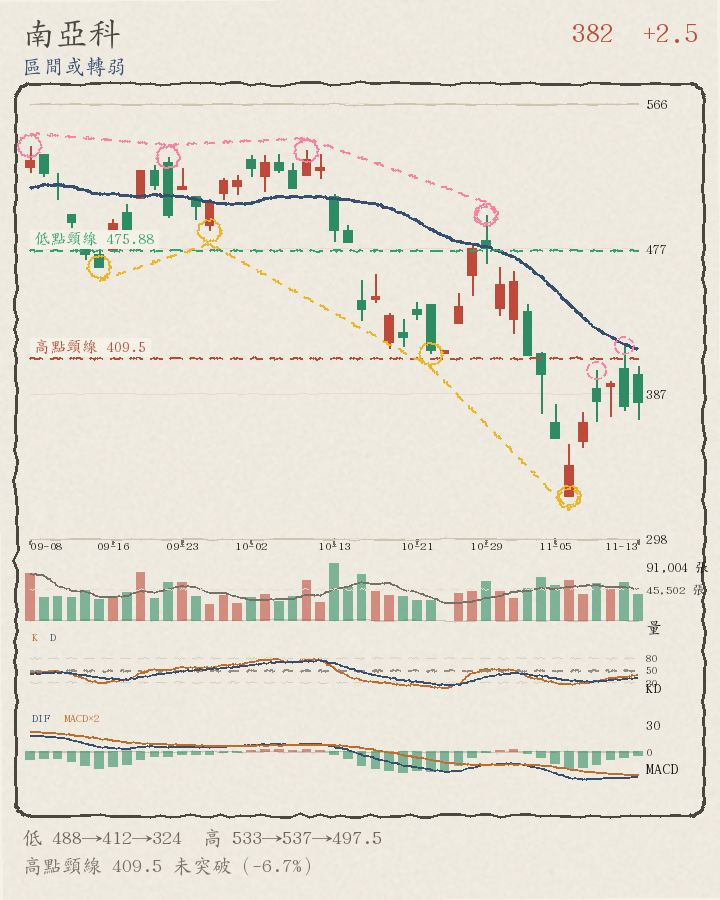
12:31 盤中 382（+0.66%），比加權指數弱 1.26 個百分點、跌破月線 417.8，離高點頸線 409.5 還差 6.7%，轉折還沒走出明顯方向。
- 月線位置：現價 382 在月線 417.8 之下（-8.6%）；5 日線 374 也在月線之下（短均在下）；月線向下
- 量能：以已過交易時間推估，今天成交量約是 20 日均量的 1.06 倍（量平），比 20 日均量大一些
- 關鍵價位：高點頸線 409.5 還沒突破，差 6.7%；前一交易日高點 417（低於 8.4%）；今天盤中高點 404.5（低於 5.6%）；今天盤中低點 371.5（高於 2.8%）
- 轉折結構：低點 488、412、324 與高點 533、537、497.5 都沒有明顯遞增，屬於區間震盪或轉弱；還沒確認的轉折低點 11-06 324；還沒確認的轉折高點 11-10 402、11-12 417（圖上虛線小圈）
量平
↑ 回上方清單
穩懋 3105 上櫃
568 +51.0（+9.86%）
區間或轉弱 盤中成交值 133.13 億・全榜第 9 名（上櫃第 2 名）・相對大盤 +7.94
好條件 2/7：站上月線、攻擊量（量增＋上漲）
不好條件 1/7：月線下彎
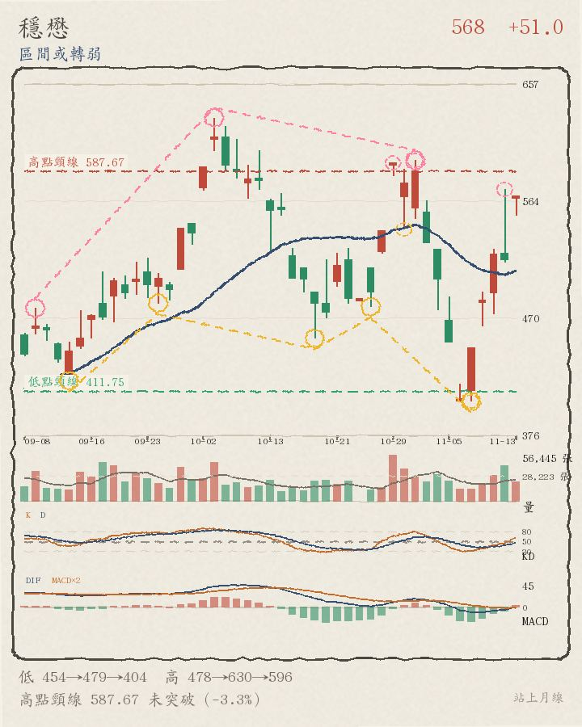
12:31 盤中 568（+9.86%），比加權指數強 7.94 個百分點、站上月線 504.6，離高點頸線 587.67 還差 3.3%，轉折還沒走出明顯方向。
- 月線位置：現價 568 在月線 504.6 之上（+12.6%）；5 日線 475 也在月線之下（短均在下）；月線向下
- 量能：以已過交易時間推估，今天成交量約是 20 日均量的 1.27 倍（量增），比 20 日均量大不少；上漲又量增，量價配合
- 關鍵價位：高點頸線 587.67 還沒突破，差 3.3%；前一交易日高點 573（低於 0.9%）；今天盤中高點 568（高於 0.0%）；今天盤中低點 552（高於 2.9%）
- 轉折結構：低點 454、479、403.5 與高點 478、630、596 都沒有明顯遞增，屬於區間震盪或轉弱；還沒確認的轉折低點 10-30 541、11-09 403.5；還沒確認的轉折高點 11-02 596、11-12 573（圖上虛線小圈）
台達電 2308 上市
1240 +0.0（+0.00%）
高點墊高、底部不穩 盤中成交值 127.04 億・全榜第 10 名（上市第 8 名）・相對大盤 -1.92
好條件 1/7：頭頭高
不好條件 4/7：相對大盤弱、在月線之下、貼近今日低點（1% 內）、月線下彎
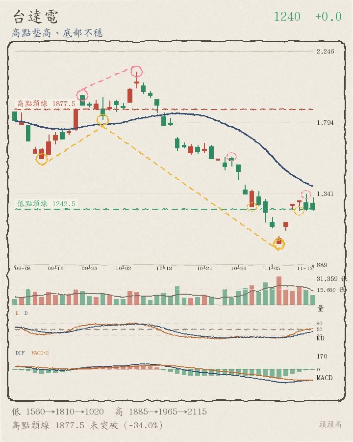
12:31 盤中 1240（+0.00%），比加權指數弱 1.92 個百分點、跌破月線 1406.5，離高點頸線 1877.5 還差 34.0%，高點還在墊高（但底部沒同步墊高）。
- 月線位置：現價 1240 在月線 1406.5 之下（-11.8%）；5 日線 1205 也在月線之下（短均在下）；月線向下
- 量能：以已過交易時間推估，今天成交量約是 20 日均量的 0.86 倍（量平），比 20 日均量少一些
- 關鍵價位：高點頸線 1877.5 還沒突破，差 34.0%；前一交易日高點 1335（低於 7.1%）；今天盤中高點 1315（低於 5.7%）；今天盤中低點 1235（高於 0.4%）
- 轉折結構：高點 1885、1965、2115 墊高（頭頭高），但低點 1560、1810、1020 沒有同步墊高；還沒確認的轉折低點 11-06 1020、11-11 1230；還沒確認的轉折高點 10-28 1575、11-12 1335（圖上虛線小圈）
國巨* 2327 上市
416 +9.0（+2.21%）
區間或轉弱 盤中成交值 126.01 億・全榜第 11 名（上市第 9 名）・相對大盤 +0.29
好條件 0/7：無
不好條件 2/7：在月線之下、月線下彎
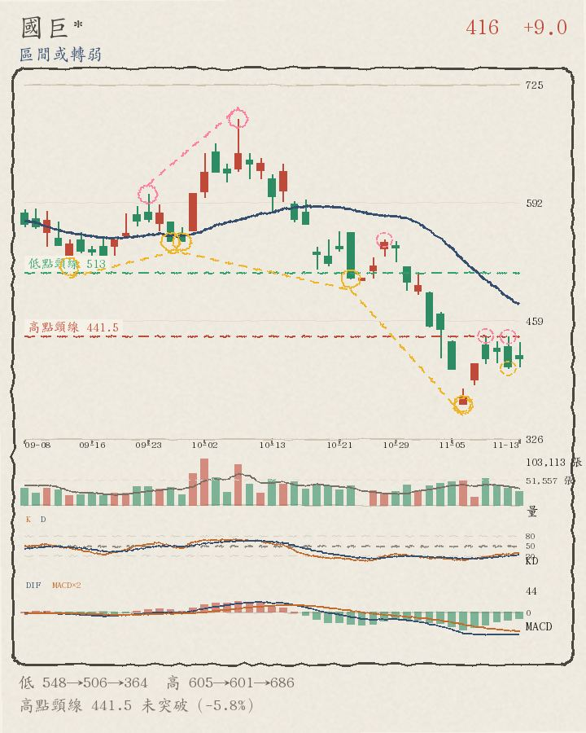
12:31 盤中 416（+2.21%），比加權指數強 0.29 個百分點、跌破月線 485.2，離高點頸線 441.5 還差 5.8%，轉折還沒走出明顯方向。
- 月線位置：現價 416 在月線 485.2 之下（-14.3%）；5 日線 406.6 也在月線之下（短均在下）；月線向下
- 量能：以已過交易時間推估，今天成交量約是 20 日均量的 0.95 倍（量平），跟 20 日均量差不多
- 關鍵價位：高點頸線 441.5 還沒突破，差 5.8%；前一交易日高點 441（低於 5.7%）；今天盤中高點 434.5（低於 4.3%）；今天盤中低點 407（高於 2.2%）
- 轉折結構：低點 548、506、364.5 與高點 605、601、686 都沒有明顯遞增，屬於區間震盪或轉弱；還沒確認的轉折低點 11-06 364.5、11-12 405.5；還沒確認的轉折高點 11-10 442、11-12 441（圖上虛線小圈）
量平
↑ 回上方清單
健策 3653 上市
5475 -130.0（-2.32%）
區間或轉弱 盤中成交值 125.92 億・全榜第 12 名（上市第 10 名）・相對大盤 -4.24
好條件 0/7：無
不好條件 6/7：今日下跌、相對大盤弱、在月線之下、貼近今日低點（1% 內）、跌破昨日低點、月線下彎
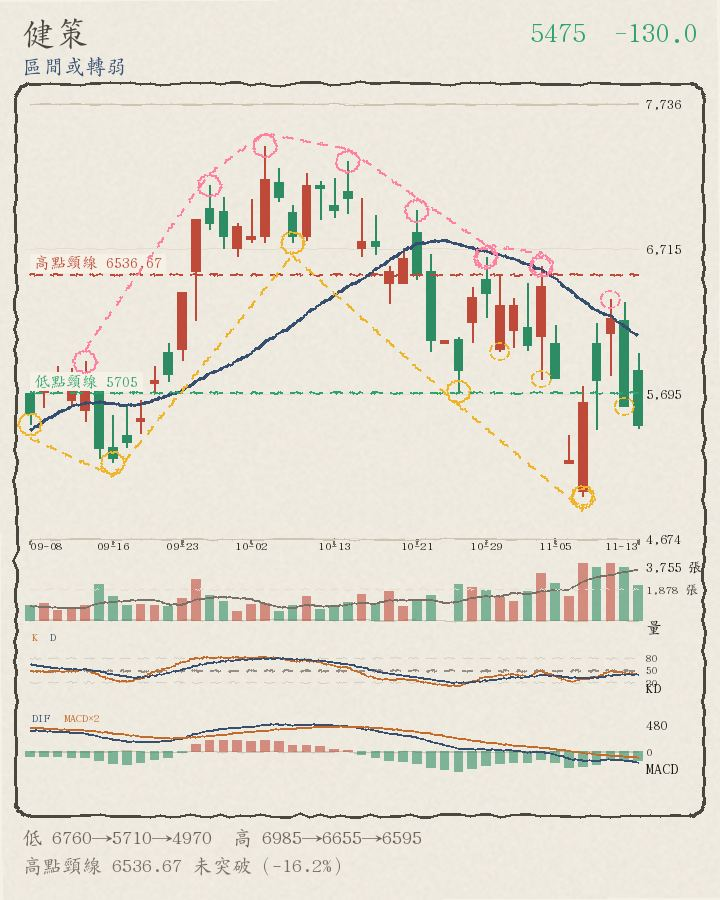
12:31 盤中 5475（-2.32%），比加權指數弱 4.24 個百分點、跌破月線 6171.25，離高點頸線 6536.67 還差 16.2%，轉折還沒走出明顯方向。
- 月線位置：現價 5475 在月線 6171.25 之下（-11.3%）；5 日線 5696 也在月線之下（短均在下）；月線向下
- 量能：以已過交易時間推估，今天成交量約是 20 日均量的 1.45 倍（量增），比 20 日均量大不少；下跌卻量增，量價背離
- 關鍵價位：高點頸線 6536.67 還沒突破，差 16.2%；前一交易日高點 6340（低於 13.6%）；今天盤中高點 5980（低於 8.4%）；今天盤中低點 5455（高於 0.4%）
- 轉折結構：低點 6760、5710、4970 與高點 6985、6655、6595 都沒有明顯遞增，屬於區間震盪或轉弱；還沒確認的轉折低點 11-09 4970、11-12 5605；還沒確認的轉折高點 11-04 6595、11-11 6360（圖上虛線小圈）
量增
↑ 回上方清單
精材 3374 上櫃
519 +47.0（+9.96%）
區間或轉弱 盤中成交值 123.99 億・全榜第 13 名（上櫃第 3 名）・相對大盤 +8.04
好條件 3/7：站上月線、突破頸線、攻擊量（量增＋上漲）
不好條件 1/7：月線下彎
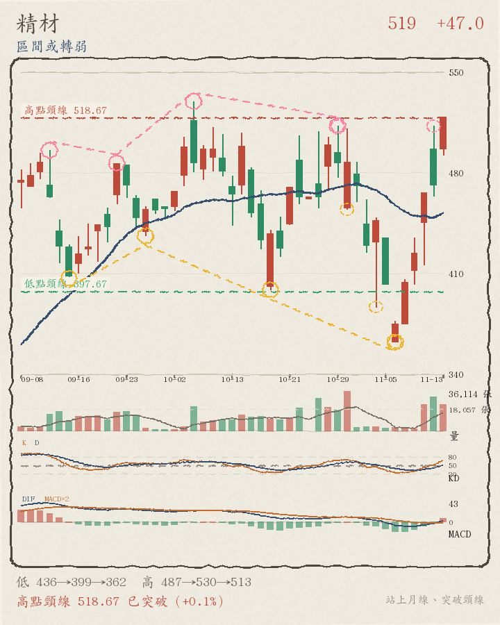
12:31 盤中 519（+9.96%），比加權指數強 8.04 個百分點、站上月線 449.075，已突破高點頸線 518.67，轉折還沒走出明顯方向。
- 月線位置：現價 519 在月線 449.075 之上（+15.6%）；5 日線 428.4 也在月線之下（短均在下）；月線向下
- 量能：以已過交易時間推估，今天成交量約是 20 日均量的 2.42 倍（爆量），比 20 日均量大不少；上漲又量增，量價配合
- 關鍵價位：高點頸線 518.67 已站上；前一交易日高點 513（高於 1.2%）；今天盤中高點 519（高於 0.0%）；今天盤中低點 492.5（高於 5.4%）
- 轉折結構：低點 436.5、399、362.5 與高點 487、530、513 都沒有明顯遞增，屬於區間震盪或轉弱；還沒確認的轉折低點 11-04 387、11-06 362.5；還沒確認的轉折高點 10-29 513、11-12 513（圖上虛線小圈）
金像電 2368 上市
1050 +75.0（+7.69%）
區間或轉弱 盤中成交值 122.01 億・全榜第 14 名（上市第 11 名）・相對大盤 +5.77
好條件 1/7：攻擊量（量增＋上漲）
不好條件 2/7：在月線之下、月線下彎
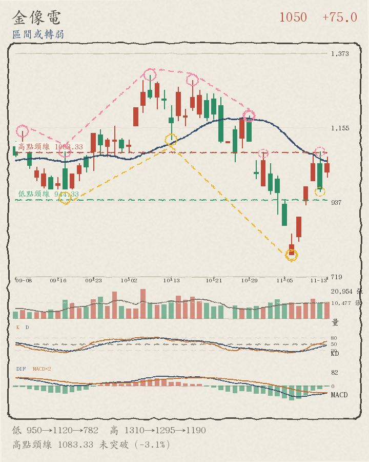
12:31 盤中 1050（+7.69%），比加權指數強 5.77 個百分點、跌破月線 1063.6，離高點頸線 1083.33 還差 3.1%，轉折還沒走出明顯方向。
- 月線位置：現價 1050 在月線 1063.6 之下（-1.3%）；5 日線 943 也在月線之下（短均在下）；月線向下
- 量能：以已過交易時間推估，今天成交量約是 20 日均量的 1.39 倍（量增），比 20 日均量大不少；上漲又量增，量價配合
- 關鍵價位：高點頸線 1083.33 還沒突破，差 3.1%；前一交易日高點 1085（低於 3.2%）；今天盤中高點 1070（低於 1.9%）；今天盤中低點 1010（高於 4.0%）
- 轉折結構：低點 950、1120、782 與高點 1310、1295、1190 都沒有明顯遞增，屬於區間震盪或轉弱；還沒確認的轉折低點 11-06 782、11-12 968；還沒確認的轉折高點 11-02 1080、11-12 1085（圖上虛線小圈）
量增
↑ 回上方清單
台光電 2383 上市
4290 +185.0（+4.51%）
區間或轉弱 盤中成交值 118.96 億・全榜第 15 名（上市第 12 名）・相對大盤 +2.59
好條件 0/7：無
不好條件 2/7：在月線之下、月線下彎
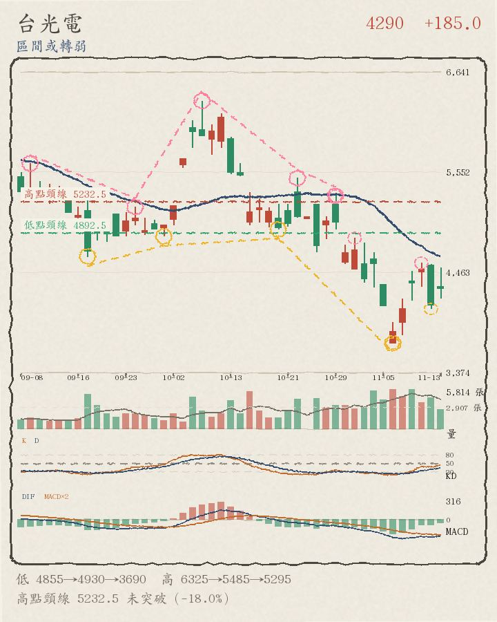
12:31 盤中 4290（+4.51%），比加權指數強 2.59 個百分點、跌破月線 4678，離高點頸線 5232.5 還差 18.0%，轉折還沒走出明顯方向。
- 月線位置：現價 4290 在月線 4678 之下（-8.3%）；5 日線 4172 也在月線之下（短均在下）；月線向下
- 量能：以已過交易時間推估，今天成交量約是 20 日均量的 0.95 倍（量平），跟 20 日均量差不多
- 關鍵價位：高點頸線 5232.5 還沒突破，差 18.0%；前一交易日高點 4550（低於 5.7%）；今天盤中高點 4510（低於 4.9%）；今天盤中低點 4180（高於 2.6%）
- 轉折結構：低點 4855、4930、3690 與高點 6325、5485、5295 都沒有明顯遞增，屬於區間震盪或轉弱；還沒確認的轉折低點 11-06 3690、11-12 4065；還沒確認的轉折高點 11-02 4835、11-11 4565（圖上虛線小圈）
量平
↑ 回上方清單
世芯-KY 3661 上市
4040 +365.0（+9.93%）
高點墊高、底部不穩 盤中成交值 114.98 億・全榜第 16 名（上市第 13 名）・相對大盤 +8.01
好條件 4/7：站上月線、頭頭高、突破頸線、攻擊量（量增＋上漲）
不好條件 1/7：月線下彎
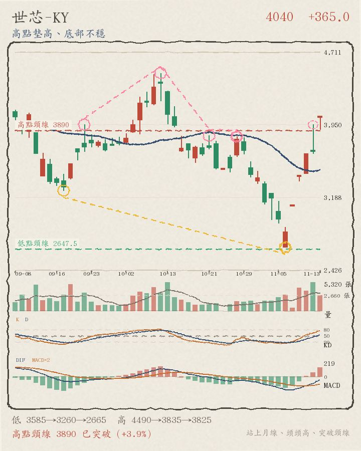
12:31 盤中 4040（+9.93%），比加權指數強 8.01 個百分點、站上月線 3460.25，已突破高點頸線 3890，高點還在墊高（但底部沒同步墊高）。
- 月線位置：現價 4040 在月線 3460.25 之上（+16.8%）；5 日線 3337 也在月線之下（短均在下）；月線向下
- 量能：以已過交易時間推估，今天成交量約是 20 日均量的 1.93 倍（爆量），比 20 日均量大不少；上漲又量增，量價配合
- 關鍵價位：高點頸線 3890 已站上；前一交易日高點 3950（高於 2.3%）；今天盤中高點 4040（高於 0.0%）；今天盤中低點 3900（高於 3.6%）
- 轉折結構：高點 4490、3835、3825 墊高（頭頭高），但低點 3585、3260、2665 沒有同步墊高；還沒確認的轉折低點 11-06 2665；還沒確認的轉折高點 10-28 3825、11-12 3950（圖上虛線小圈）
聯茂 6213 上市
544 +22.0（+4.21%）
高點墊高、底部不穩 盤中成交值 99.59 億・全榜第 17 名（上市第 14 名）・相對大盤 +2.29
好條件 2/7：頭頭高、攻擊量（量增＋上漲）
不好條件 2/7：在月線之下、月線下彎
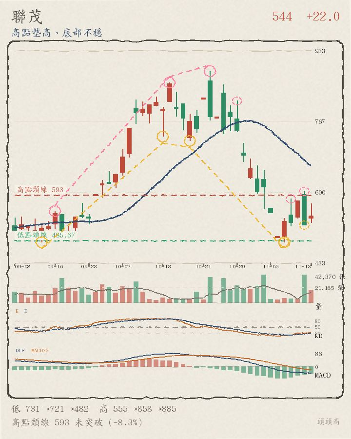
12:31 盤中 544（+4.21%），比加權指數強 2.29 個百分點、跌破月線 674.9，離高點頸線 593 還差 8.3%，高點還在墊高（但底部沒同步墊高）。
- 月線位置：現價 544 在月線 674.9 之下（-19.4%）；5 日線 531.4 也在月線之下（短均在下）；月線向下
- 量能：以已過交易時間推估，今天成交量約是 20 日均量的 1.52 倍（爆量），比 20 日均量大不少；上漲又量增，量價配合
- 關鍵價位：高點頸線 593 還沒突破，差 8.3%；前一交易日高點 602（低於 9.6%）；今天盤中高點 573（低於 5.1%）；今天盤中低點 528（高於 3.0%）
- 轉折結構：高點 555、858、885 墊高（頭頭高），但低點 731、721、481.5 沒有同步墊高；還沒確認的轉折低點 11-09 481.5、11-12 522；還沒確認的轉折高點 11-10 584、11-12 602（圖上虛線小圈）
南電 8046 上市
1000 +28.0（+2.88%）
區間或轉弱 盤中成交值 96.73 億・全榜第 18 名（上市第 15 名）・相對大盤 +0.96
好條件 1/7：攻擊量（量增＋上漲）
不好條件 2/7：在月線之下、月線下彎
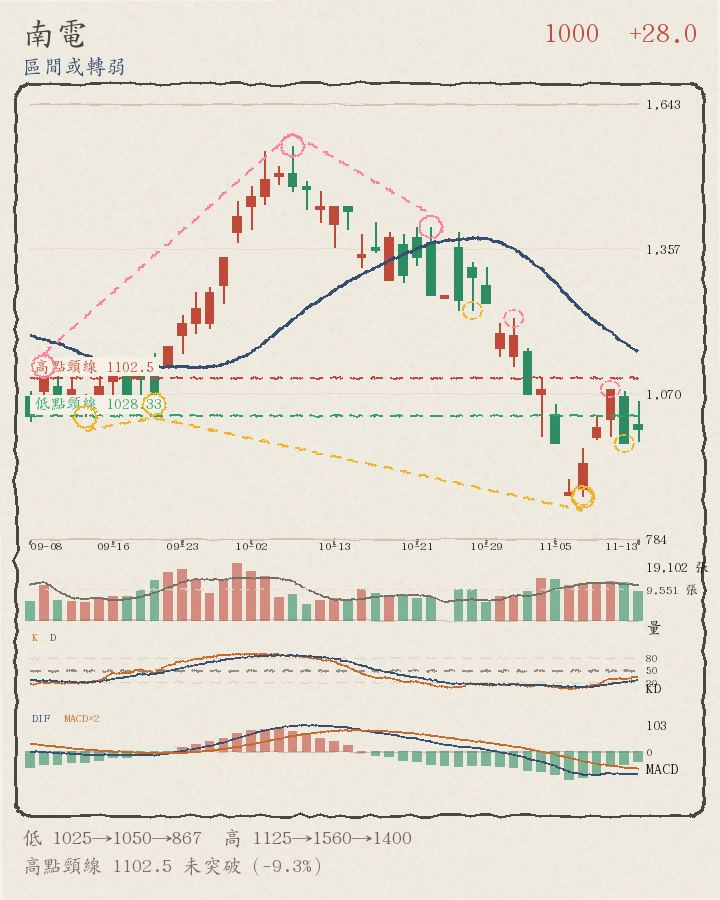
12:31 盤中 1000（+2.88%），比加權指數強 0.96 個百分點、跌破月線 1171.1，離高點頸線 1102.5 還差 9.3%，轉折還沒走出明顯方向。
- 月線位置：現價 1000 在月線 1171.1 之下（-14.6%）；5 日線 973 也在月線之下（短均在下）；月線向下
- 量能：以已過交易時間推估，今天成交量約是 20 日均量的 1.27 倍（量增），比 20 日均量大不少；上漲又量增，量價配合
- 關鍵價位：高點頸線 1102.5 還沒突破，差 9.3%；前一交易日高點 1075（低於 7.0%）；今天盤中高點 1055（低於 5.2%）；今天盤中低點 976（高於 2.5%）
- 轉折結構：低點 1025、1050、867 與高點 1125、1560、1400 都沒有明顯遞增，屬於區間震盪或轉弱；還沒確認的轉折低點 11-09 867、11-12 972；還沒確認的轉折高點 11-02 1220、11-11 1080（圖上虛線小圈）
量增
↑ 回上方清單
日月光投控 3711 上市
604 +18.0（+3.07%）
區間或轉弱 盤中成交值 94.59 億・全榜第 19 名（上市第 16 名）・相對大盤 +1.15
好條件 0/7：無
不好條件 2/7：在月線之下、月線下彎
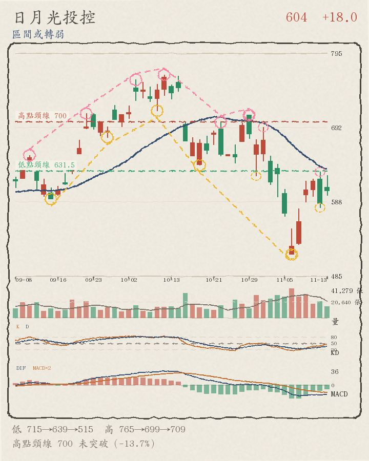
12:31 盤中 604（+3.07%），比加權指數強 1.15 個百分點、跌破月線 637.4，離高點頸線 700 還差 13.7%，轉折還沒走出明顯方向。
- 月線位置：現價 604 在月線 637.4 之下（-5.2%）；5 日線 579.2 也在月線之下（短均在下）；月線向下
- 量能：以已過交易時間推估，今天成交量約是 20 日均量的 0.86 倍（量平），比 20 日均量少一些
- 關鍵價位：高點頸線 700 還沒突破，差 13.7%；前一交易日高點 630（低於 4.1%）；今天盤中高點 625（低於 3.4%）；今天盤中低點 597（高於 1.2%）
- 轉折結構：低點 715、639、515 與高點 765、699、709 都沒有明顯遞增，屬於區間震盪或轉弱；還沒確認的轉折低點 11-06 515、11-12 580；還沒確認的轉折高點 11-02 692、11-12 630（圖上虛線小圈）
量平
↑ 回上方清單
大立光 3008 上市
5370 +315.0（+6.23%）
區間或轉弱 盤中成交值 87.8 億・全榜第 20 名（上市第 17 名）・相對大盤 +4.31
好條件 0/7：無
不好條件 2/7：在月線之下、月線下彎
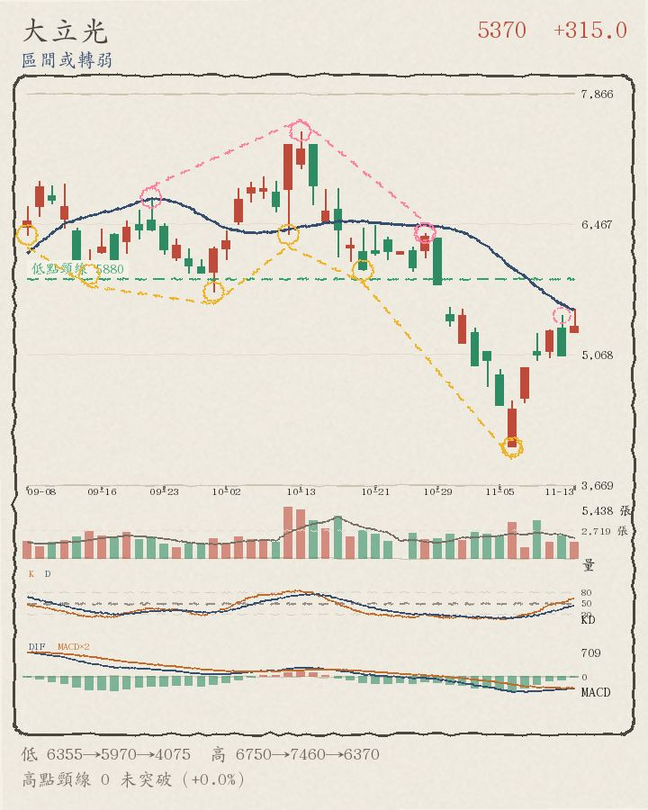
12:31 盤中 5370（+6.23%），比加權指數強 4.31 個百分點、跌破月線 5607.25，轉折還沒走出明顯方向。
- 月線位置：現價 5370 在月線 5607.25 之下（-4.2%）；5 日線 4970 也在月線之下（短均在下）；月線向下
- 量能：以已過交易時間推估，今天成交量約是 20 日均量的 0.80 倍（量平），比 20 日均量少很多；上漲但量縮，量價背離
- 關鍵價位：前一交易日高點 5490（低於 2.2%）；今天盤中高點 5560（低於 3.4%）；今天盤中低點 5305（高於 1.2%）
- 轉折結構：低點 6355、5970、4075 與高點 6750、7460、6370 都沒有明顯遞增，屬於區間震盪或轉弱；還沒確認的轉折低點 11-06 4075；還沒確認的轉折高點 10-28 6370、11-12 5490（圖上虛線小圈）
量平
↑ 回上方清單
台燿 6274 上櫃
980 +24.0（+2.51%）
區間或轉弱 盤中成交值 86.49 億・全榜第 21 名（上櫃第 4 名）・相對大盤 +0.59
好條件 0/7：無
不好條件 2/7：在月線之下、月線下彎
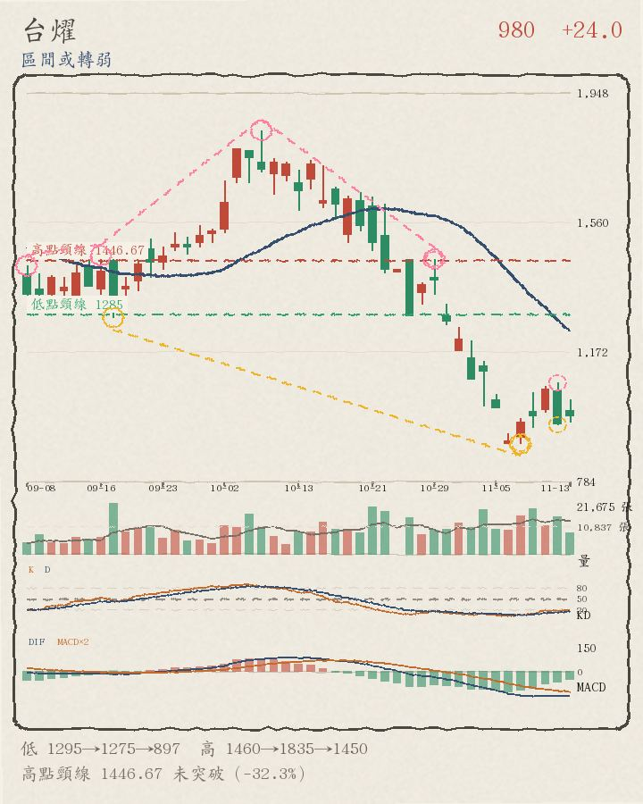
12:31 盤中 980（+2.51%），比加權指數強 0.59 個百分點、跌破月線 1267.8，離高點頸線 1446.67 還差 32.3%，轉折還沒走出明顯方向。
- 月線位置：現價 980 在月線 1267.8 之下（-22.7%）；5 日線 973.2 也在月線之下（短均在下）；月線向下
- 量能：以已過交易時間推估，今天成交量約是 20 日均量的 0.87 倍（量平），比 20 日均量少一些
- 關鍵價位：高點頸線 1446.67 還沒突破，差 32.3%；前一交易日高點 1080（低於 9.3%）；今天盤中高點 1030（低於 4.9%）；今天盤中低點 963（高於 1.8%）
- 轉折結構：低點 1295、1275、897 與高點 1460、1835、1450 都沒有明顯遞增，屬於區間震盪或轉弱；還沒確認的轉折低點 11-09 897、11-12 954；還沒確認的轉折高點 10-29 1450、11-12 1080（圖上虛線小圈）
量平
↑ 回上方清單
奇鋐 3017 上市
3050 +275.0（+9.91%）
區間或轉弱 盤中成交值 82.35 億・全榜第 22 名（上市第 18 名）・相對大盤 +7.99
好條件 2/7：站上月線、攻擊量（量增＋上漲）
不好條件 1/7：月線下彎
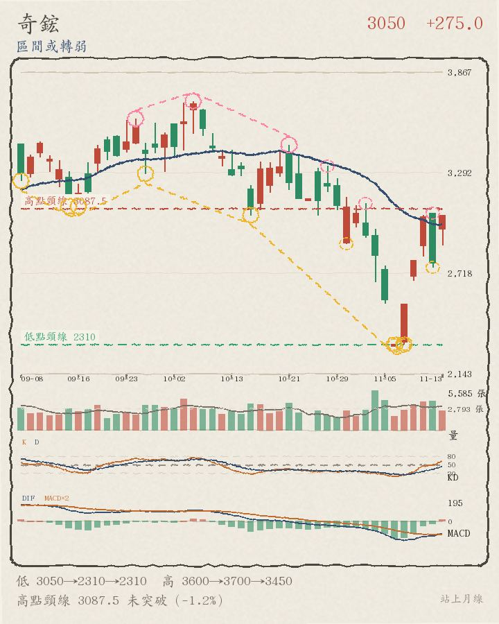
12:31 盤中 3050（+9.91%），比加權指數強 7.99 個百分點、站上月線 2997.5，離高點頸線 3087.5 還差 1.2%，轉折還沒走出明顯方向。
- 月線位置：現價 3050 在月線 2997.5 之上（+1.8%）；5 日線 2691 也在月線之下（短均在下）；月線向下
- 量能：以已過交易時間推估，今天成交量約是 20 日均量的 1.16 倍（量增），比 20 日均量大不少；上漲又量增，量價配合
- 關鍵價位：高點頸線 3087.5 還沒突破，差 1.2%；前一交易日高點 3060（低於 0.3%）；今天盤中高點 3050（高於 0.0%）；今天盤中低點 2880（高於 5.9%）
- 轉折結構：低點 3050、2310、2310 與高點 3600、3700、3450 都沒有明顯遞增，屬於區間震盪或轉弱；還沒確認的轉折低點 11-09 2310、11-12 2750；還沒確認的轉折高點 11-03 3115、11-12 3060（圖上虛線小圈）
聯亞 3081 上櫃
2100 +0.0（+0.00%）
區間或轉弱 盤中成交值 81.71 億・全榜第 23 名（上櫃第 5 名）・相對大盤 -1.92
好條件 0/7：無
不好條件 3/7：相對大盤弱、在月線之下、月線下彎
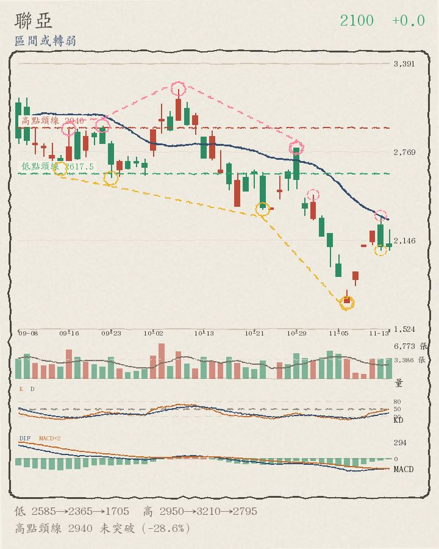
12:31 盤中 2100（+0.00%），比加權指數弱 1.92 個百分點、跌破月線 2316.5，離高點頸線 2940 還差 28.6%，轉折還沒走出明顯方向。
- 月線位置：現價 2100 在月線 2316.5 之下（-9.3%）；5 日線 2021 也在月線之下（短均在下）；月線向下
- 量能：以已過交易時間推估，今天成交量約是 20 日均量的 1.54 倍（爆量），比 20 日均量大不少
- 關鍵價位：高點頸線 2940 還沒突破，差 28.6%；前一交易日高點 2320（低於 9.5%）；今天盤中高點 2220（低於 5.4%）；今天盤中低點 2075（高於 1.2%）
- 轉折結構：低點 2585、2365、1705 與高點 2950、3210、2795 都沒有明顯遞增，屬於區間震盪或轉弱；還沒確認的轉折低點 11-06 1705、11-12 2075；還沒確認的轉折高點 11-02 2465、11-12 2320（圖上虛線小圈）
華通 2313 上市
206 +10.0（+5.10%）
高點墊高、底部不穩 盤中成交值 81.27 億・全榜第 24 名（上市第 19 名）・相對大盤 +3.18
好條件 2/7：頭頭高、攻擊量（量增＋上漲）
不好條件 2/7：在月線之下、月線下彎
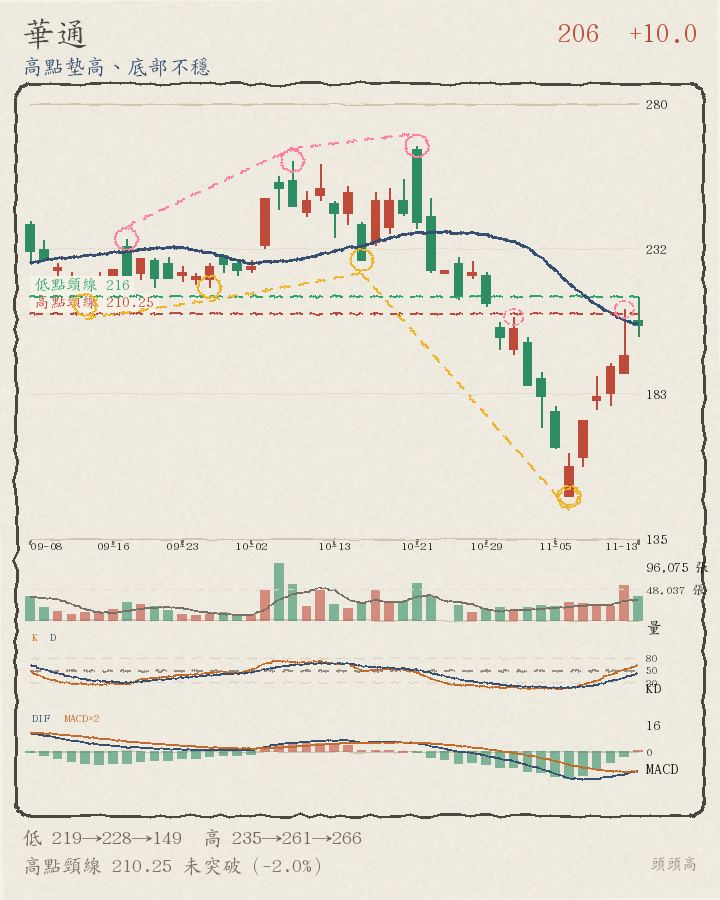
12:31 盤中 206（+5.10%），比加權指數強 3.18 個百分點、跌破月線 207.8，離高點頸線 210.25 還差 2.0%，高點還在墊高（但底部沒同步墊高）。
- 月線位置：現價 206 在月線 207.8 之下（-0.9%）；5 日線 180.9 也在月線之下（短均在下）；月線向下
- 量能：以已過交易時間推估，今天成交量約是 20 日均量的 1.83 倍（爆量），比 20 日均量大不少；上漲又量增，量價配合
- 關鍵價位：高點頸線 210.25 還沒突破，差 2.0%；前一交易日高點 211.5（低於 2.6%）；今天盤中高點 215.5（低於 4.4%）；今天盤中低點 202.5（高於 1.7%）
- 轉折結構：高點 235、261、266 墊高（頭頭高），但低點 219、228、149 沒有同步墊高；還沒確認的轉折低點 11-06 149；還沒確認的轉折高點 11-02 209、11-12 211.5（圖上虛線小圈）
友達 2409 上市
29.65 +0.5（+1.54%）
區間或轉弱 盤中成交值 79.92 億・全榜第 25 名（上市第 20 名）・相對大盤 -0.38
好條件 1/7：攻擊量（量增＋上漲）
不好條件 3/7：相對大盤弱、在月線之下、月線下彎
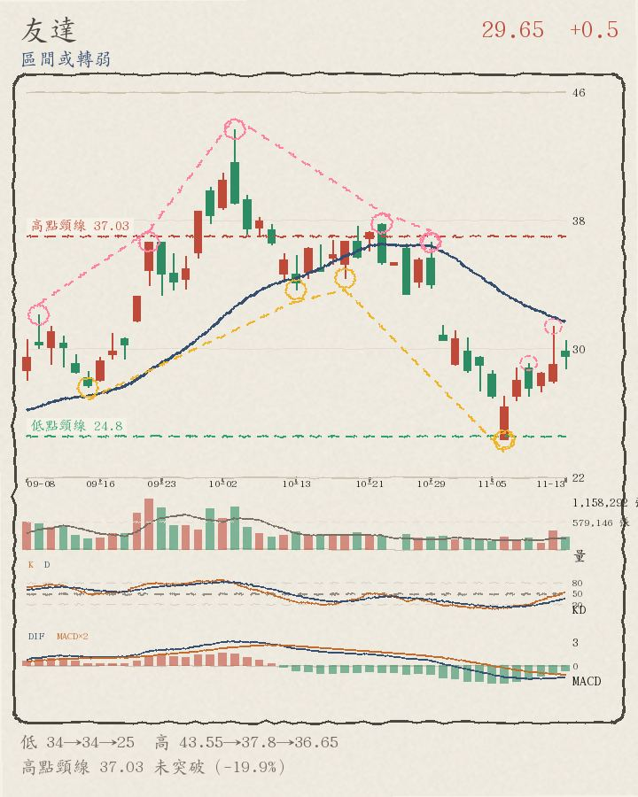
12:31 盤中 29.65（+1.54%），比加權指數弱 0.38 個百分點、跌破月線 32.06，離高點頸線 37.03 還差 19.9%，轉折還沒走出明顯方向。
- 月線位置：現價 29.65 在月線 32.06 之下（-7.5%）；5 日線 28.06 也在月線之下（短均在下）；月線向下
- 量能：以已過交易時間推估，今天成交量約是 20 日均量的 1.28 倍（量增），比 20 日均量大不少；上漲又量增，量價配合
- 關鍵價位：高點頸線 37.03 還沒突破，差 19.9%；前一交易日高點 31.5（低於 5.9%）；今天盤中高點 30.65（低於 3.3%）；今天盤中低點 28.9（高於 2.6%）
- 轉折結構：低點 33.75、34.45、24.55 與高點 43.55、37.8、36.65 都沒有明顯遞增，屬於區間震盪或轉弱；還沒確認的轉折低點 11-06 24.55；還沒確認的轉折高點 11-10 29.25、11-12 31.5（圖上虛線小圈）
量增
↑ 回上方清單
大量 3167 上市
827 -52.0（-5.92%）
區間或轉弱 盤中成交值 78.9 億・全榜第 26 名（上市第 21 名）・相對大盤 -7.84
好條件 0/7：無
不好條件 5/7：今日下跌、相對大盤弱、在月線之下、跌破昨日低點、月線下彎
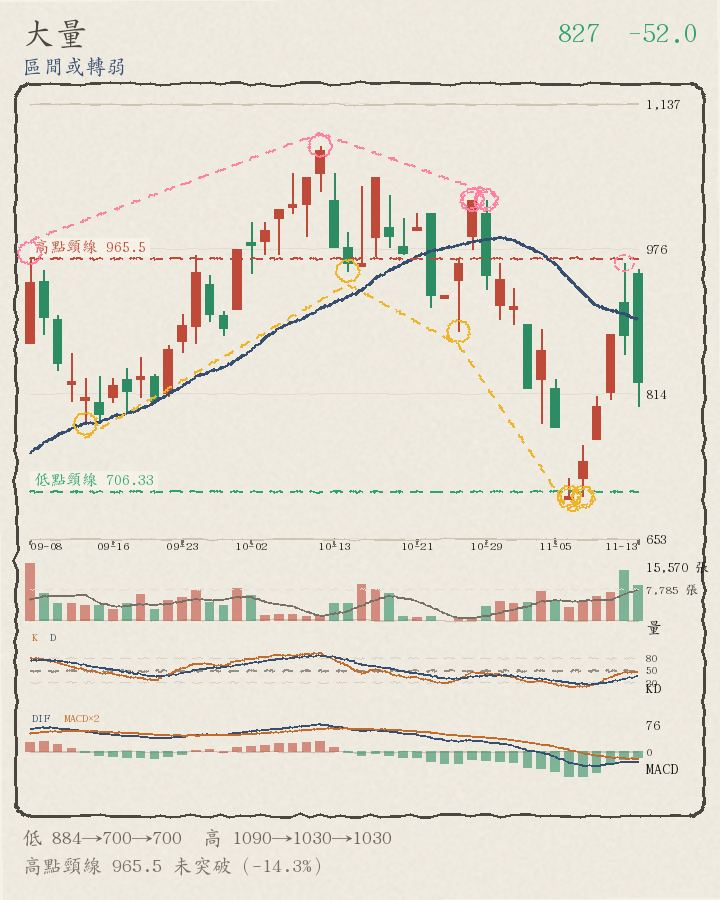
12:31 盤中 827（-5.92%），比加權指數弱 7.84 個百分點、跌破月線 903.7，離高點頸線 965.5 還差 14.3%，轉折還沒走出明顯方向。
- 月線位置：現價 827 在月線 903.7 之下（-8.5%）；5 日線 800 也在月線之下（短均在下）；月線向下
- 量能：以已過交易時間推估，今天成交量約是 20 日均量的 2.65 倍（爆量），比 20 日均量大不少；下跌卻量增，量價背離
- 關鍵價位：高點頸線 965.5 還沒突破，差 14.3%；前一交易日高點 960（低於 13.9%）；今天盤中高點 953（低於 13.2%）；今天盤中低點 800（高於 3.4%）
- 轉折結構：低點 884、700、700 與高點 1090、1030、1030 都沒有明顯遞增，屬於區間震盪或轉弱；還沒確認的轉折低點 11-06 700、11-09 700；還沒確認的轉折高點 10-29 1030、11-12 960（圖上虛線小圈）
聯電 2303 上市
102.5 +1.5（+1.49%）
區間或轉弱 盤中成交值 78.42 億・全榜第 27 名（上市第 22 名）・相對大盤 -0.43
好條件 0/7：無
不好條件 3/7：相對大盤弱、在月線之下、月線下彎
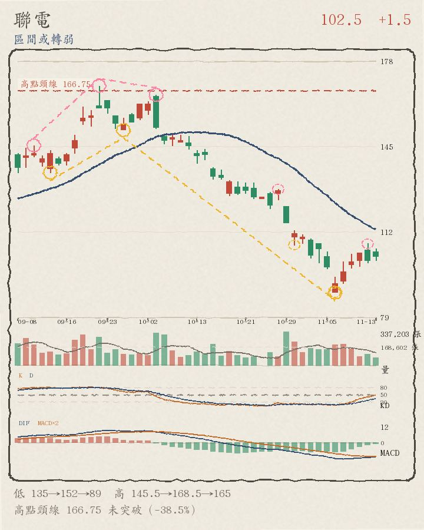
12:31 盤中 102.5（+1.49%），比加權指數弱 0.43 個百分點、跌破月線 114.63，離高點頸線 166.75 還差 38.5%，轉折還沒走出明顯方向。
- 月線位置：現價 102.5 在月線 114.63 之下（-10.6%）；5 日線 98.84 也在月線之下（短均在下）；月線向下
- 量能：以已過交易時間推估，今天成交量約是 20 日均量的 0.65 倍（量縮），比 20 日均量少很多；上漲但量縮，量價背離
- 關鍵價位：高點頸線 166.75 還沒突破，差 38.5%；前一交易日高點 107.5（低於 4.7%）；今天盤中高點 105.5（低於 2.8%）；今天盤中低點 101（高於 1.5%）
- 轉折結構：低點 135、151.5、88.6 與高點 145.5、168.5、165 都沒有明顯遞增，屬於區間震盪或轉弱；還沒確認的轉折低點 10-30 107、11-06 88.6；還沒確認的轉折高點 10-28 128.5、11-12 107.5（圖上虛線小圈）
量縮
↑ 回上方清單
定穎投控 3715 上市
141 -2.5（-1.74%）
區間或轉弱 盤中成交值 77.04 億・全榜第 28 名（上市第 23 名）・相對大盤 -3.66
好條件 1/7：站上月線
不好條件 3/7：今日下跌、相對大盤弱、月線下彎
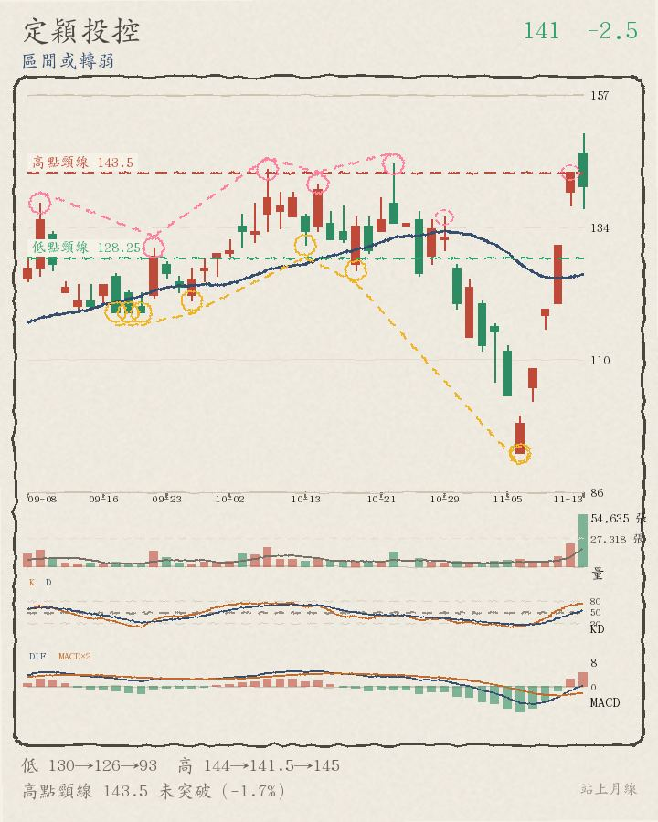
12:31 盤中 141（-1.74%），比加權指數弱 3.66 個百分點、站上月線 124.785，離高點頸線 143.5 還差 1.7%，轉折還沒走出明顯方向。
- 月線位置：現價 141 在月線 124.785 之上（+13.0%）；5 日線 120.04 也在月線之下（短均在下）；月線向下
- 量能：以已過交易時間推估，今天成交量約是 20 日均量的 11.76 倍（爆量），比 20 日均量大不少；下跌卻量增，量價背離
- 關鍵價位：高點頸線 143.5 還沒突破，差 1.7%；前一交易日高點 143.5（低於 1.7%）；今天盤中高點 150.5（低於 6.3%）；今天盤中低點 137（高於 2.9%）
- 轉折結構：低點 130.5、126、93.2 與高點 144、141.5、145 都沒有明顯遞增，屬於區間震盪或轉弱；還沒確認的轉折低點 11-06 93.2；還沒確認的轉折高點 10-29 135.5、11-12 143.5（圖上虛線小圈）
鴻海 2317 上市
240.5 +0.5（+0.21%）
區間或轉弱 盤中成交值 75.72 億・全榜第 29 名（上市第 24 名）・相對大盤 -1.71
好條件 0/7：無
不好條件 3/7：相對大盤弱、在月線之下、月線下彎
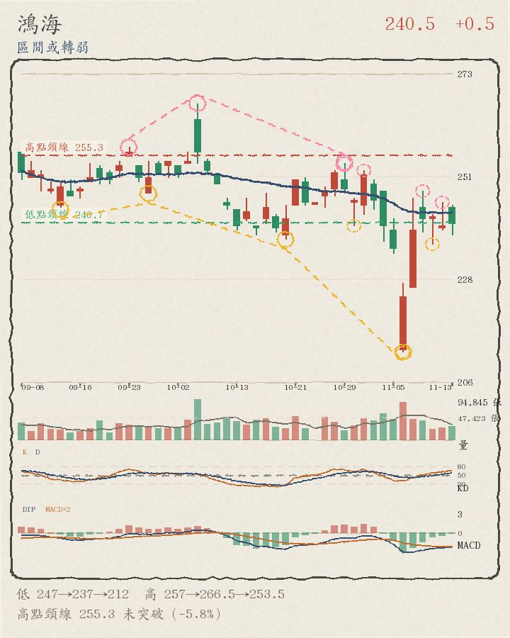
12:31 盤中 240.5（+0.21%），比加權指數弱 1.71 個百分點、跌破月線 242.775，離高點頸線 255.3 還差 5.8%，轉折還沒走出明顯方向。
- 月線位置：現價 240.5 在月線 242.775 之下（-0.9%）；5 日線 237.4 也在月線之下（短均在下）；月線向下
- 量能：以已過交易時間推估，今天成交量約是 20 日均量的 0.94 倍（量平），比 20 日均量少一些
- 關鍵價位：高點頸線 255.3 還沒突破，差 5.8%；前一交易日高點 245（低於 1.8%）；今天盤中高點 244.5（低於 1.6%）；今天盤中低點 238（高於 1.1%）
- 轉折結構：低點 247、237、212.5 與高點 257、266.5、253.5 都沒有明顯遞增，屬於區間震盪或轉弱；還沒確認的轉折低點 11-06 212.5、11-11 236；還沒確認的轉折高點 11-10 247.5、11-12 245（圖上虛線小圈）
量平
↑ 回上方清單
臻鼎-KY 4958 上市
447 +17.0（+3.95%）
區間或轉弱 盤中成交值 74.83 億・全榜第 30 名（上市第 25 名）・相對大盤 +2.03
好條件 0/7：無
不好條件 2/7：在月線之下、月線下彎
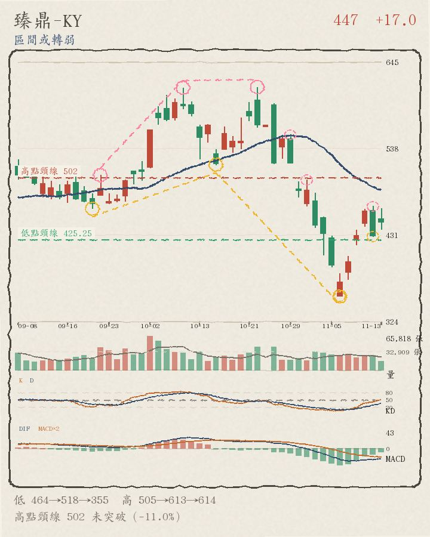
12:31 盤中 447（+3.95%），比加權指數強 2.03 個百分點、跌破月線 490.375，離高點頸線 502 還差 11.0%，轉折還沒走出明顯方向。
- 月線位置：現價 447 在月線 490.375 之下（-8.8%）；5 日線 418.5 也在月線之下（短均在下）；月線向下
- 量能：以已過交易時間推估，今天成交量約是 20 日均量的 0.78 倍（量平），比 20 日均量少很多；上漲但量縮，量價背離
- 關鍵價位：高點頸線 502 還沒突破，差 11.0%；前一交易日高點 466.5（低於 4.2%）；今天盤中高點 463.5（低於 3.6%）；今天盤中低點 438（高於 2.1%）
- 轉折結構：低點 463.5、518、355 與高點 505、613、614 都沒有明顯遞增，屬於區間震盪或轉弱；還沒確認的轉折低點 11-06 355、11-12 429；還沒確認的轉折高點 11-02 499、11-12 466.5（圖上虛線小圈）
量平
↑ 回上方清單
雙鴻 3324 上櫃
1170 +0.0（+0.00%）
區間或轉弱 盤中成交值 71.79 億・全榜第 31 名（上櫃第 6 名）・相對大盤 -1.92
好條件 0/7：無
不好條件 3/7：相對大盤弱、在月線之下、月線下彎
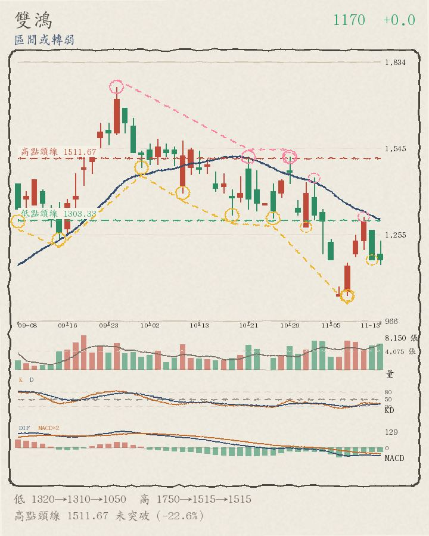
12:31 盤中 1170（+0.00%），比加權指數弱 1.92 個百分點、跌破月線 1318.25，離高點頸線 1511.67 還差 22.6%，轉折還沒走出明顯方向。
- 月線位置：現價 1170 在月線 1318.25 之下（-11.2%）；5 日線 1182 也在月線之下（短均在下）；月線向下
- 量能：以已過交易時間推估，今天成交量約是 20 日均量的 1.86 倍（爆量），比 20 日均量大不少
- 關鍵價位：高點頸線 1511.67 還沒突破，差 22.6%；前一交易日高點 1270（低於 7.9%）；今天盤中高點 1235（低於 5.3%）；今天盤中低點 1155（高於 1.3%）
- 轉折結構：低點 1320、1310、1050 與高點 1750、1515、1515 都沒有明顯遞增，屬於區間震盪或轉弱；還沒確認的轉折低點 11-09 1050、11-12 1170；還沒確認的轉折高點 11-03 1445、11-11 1315（圖上虛線小圈）
華新科 2492 上市
291 +19.0（+6.99%）
區間或轉弱 盤中成交值 67.64 億・全榜第 32 名（上市第 26 名）・相對大盤 +5.07
好條件 1/7：攻擊量（量增＋上漲）
不好條件 2/7：在月線之下、月線下彎
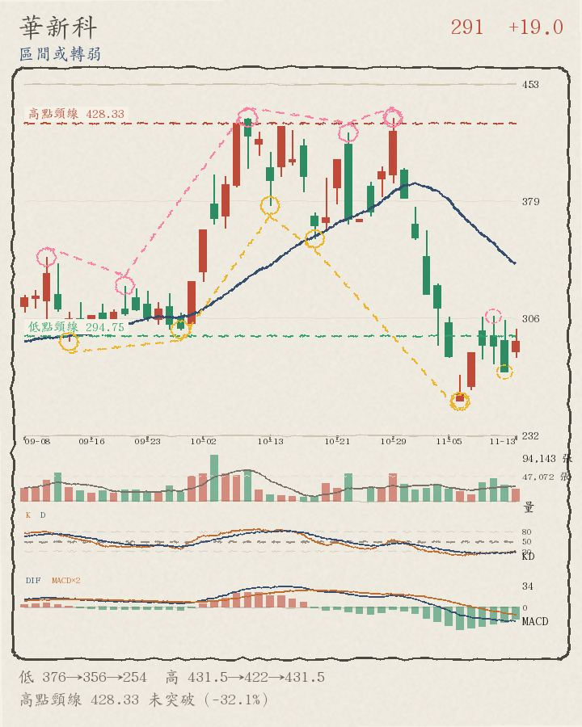
12:31 盤中 291（+6.99%），比加權指數強 5.07 個百分點、跌破月線 345.525，離高點頸線 428.33 還差 32.1%，轉折還沒走出明顯方向。
- 月線位置：現價 291 在月線 345.525 之下（-15.8%）；5 日線 278.2 也在月線之下（短均在下）；月線向下
- 量能：以已過交易時間推估，今天成交量約是 20 日均量的 1.10 倍（量增），比 20 日均量大一些；上漲又量增，量價配合
- 關鍵價位：高點頸線 428.33 還沒突破，差 32.1%；前一交易日高點 304.5（低於 4.4%）；今天盤中高點 299（低於 2.7%）；今天盤中低點 281（高於 3.6%）
- 轉折結構：低點 376.5、355.5、253.5 與高點 431.5、422、431.5 都沒有明顯遞增，屬於區間震盪或轉弱；還沒確認的轉折低點 11-06 253.5、11-12 272；還沒確認的轉折高點 10-29 431.5、11-11 307（圖上虛線小圈）
量增
↑ 回上方清單
旺矽 6223 上櫃
4715 +60.0（+1.29%）
區間或轉弱 盤中成交值 63.7 億・全榜第 33 名（上櫃第 7 名）・相對大盤 -0.63
好條件 2/7：站上月線、攻擊量（量增＋上漲）
不好條件 2/7：相對大盤弱、月線下彎
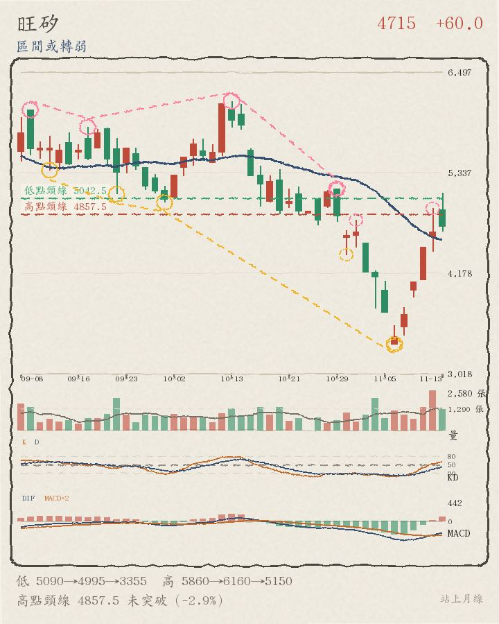
12:31 盤中 4715（+1.29%），比加權指數弱 0.63 個百分點、站上月線 4592.25，離高點頸線 4857.5 還差 2.9%，轉折還沒走出明顯方向。
- 月線位置：現價 4715 在月線 4592.25 之上（+2.7%）；5 日線 4072 也在月線之下（短均在下）；月線向下
- 量能：以已過交易時間推估，今天成交量約是 20 日均量的 1.74 倍（爆量），比 20 日均量大不少；上漲又量增，量價配合
- 關鍵價位：高點頸線 4857.5 還沒突破，差 2.9%；前一交易日高點 4925（低於 4.3%）；今天盤中高點 5100（低於 7.5%）；今天盤中低點 4660（高於 1.2%）
- 轉折結構：低點 5090、4995、3355 與高點 5860、6160、5150 都沒有明顯遞增，屬於區間震盪或轉弱；還沒確認的轉折低點 10-30 4390、11-06 3355；還沒確認的轉折高點 11-02 4790、11-12 4925（圖上虛線小圈）
GIS-KY 6456 上市
102 +0.5（+0.49%）
區間或轉弱 盤中成交值 63.33 億・全榜第 34 名（上市第 27 名）・相對大盤 -1.43
好條件 3/7：站上月線、突破頸線、攻擊量（量增＋上漲）
不好條件 2/7：相對大盤弱、月線下彎
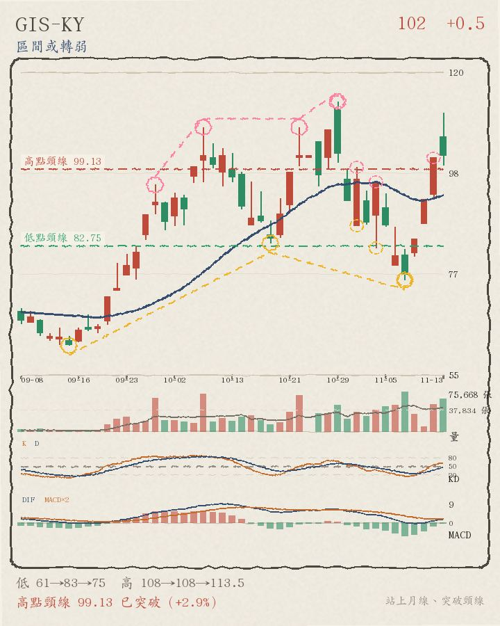
12:31 盤中 102（+0.49%），比加權指數弱 1.43 個百分點、站上月線 92.85，已突破高點頸線 99.13，轉折還沒走出明顯方向。
- 月線位置：現價 102 在月線 92.85 之上（+9.8%）；5 日線 87.1 也在月線之下（短均在下）；月線向下
- 量能：以已過交易時間推估，今天成交量約是 20 日均量的 2.25 倍（爆量），比 20 日均量大不少；上漲又量增，量價配合
- 關鍵價位：高點頸線 99.13 已站上；前一交易日高點 101.5（高於 0.5%）；今天盤中高點 111（低於 8.1%）；今天盤中低點 99.9（高於 2.1%）
- 轉折結構：低點 61.4、83.3、75.4 與高點 108、108、113.5 都沒有明顯遞增，屬於區間震盪或轉弱；還沒確認的轉折低點 11-04 82.2、11-09 75.4；還沒確認的轉折高點 11-04 96.4、11-12 101.5（圖上虛線小圈）
敬鵬 2355 上市
66.3 +5.6（+9.23%）
高點墊高、底部不穩 盤中成交值 63.18 億・全榜第 35 名（上市第 28 名）・相對大盤 +7.31
好條件 6/7：站上月線、月線向上、頭頭高、突破頸線、攻擊量（量增＋上漲）、守住今日高檔（距今日高點 1% 內）
不好條件 0/7：無
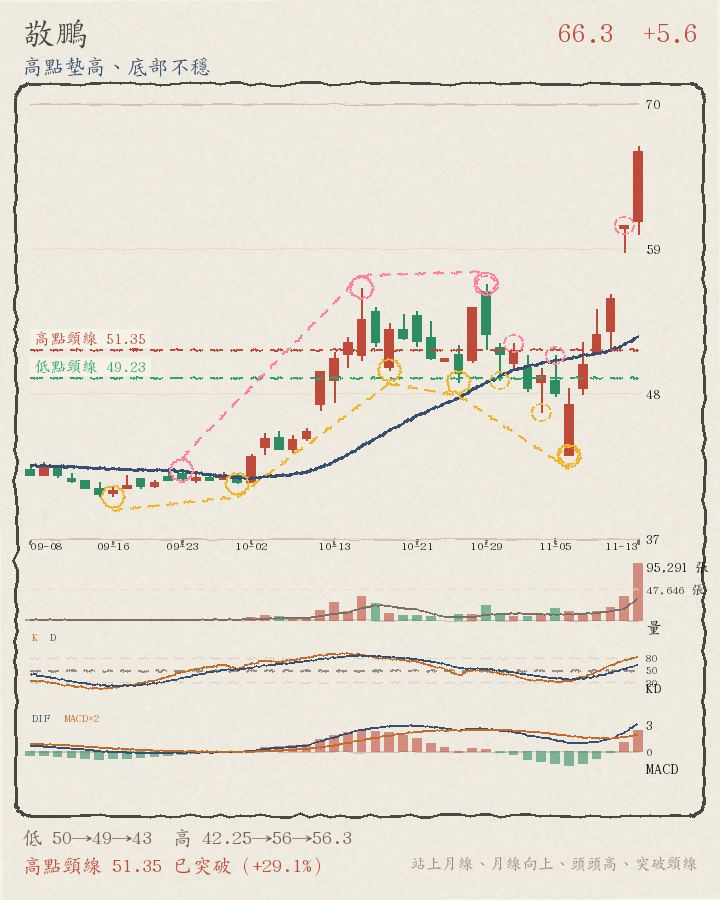
12:31 盤中 66.3（+9.23%），比加權指數強 7.31 個百分點、站上月線 51.723，已突破高點頸線 51.35，高點還在墊高（但底部沒同步墊高）。
- 月線位置：現價 66.3 在月線 51.723 之上（+28.2%）；5 日線 53.17 也在月線之上（短均在上）；月線向上
- 量能：以已過交易時間推估，今天成交量約是 20 日均量的 8.86 倍（爆量），比 20 日均量大不少；上漲又量增，量價配合
- 關鍵價位：高點頸線 51.35 已站上；前一交易日高點 60.7（高於 9.2%）；今天盤中高點 66.7（低於 0.6%）；今天盤中低點 60（高於 10.5%）
- 轉折結構：高點 42.25、56、56.3 墊高（頭頭高），但低點 49.8、48.9、43.35 沒有同步墊高；還沒確認的轉折低點 11-04 46.6、11-06 43.35；還沒確認的轉折高點 11-05 50.9、11-12 60.7（圖上虛線小圈）
金居 8358 上櫃
384 +15.5（+4.21%）
區間或轉弱 盤中成交值 61.21 億・全榜第 36 名（上櫃第 8 名）・相對大盤 +2.29
好條件 1/7：攻擊量（量增＋上漲）
不好條件 2/7：在月線之下、月線下彎
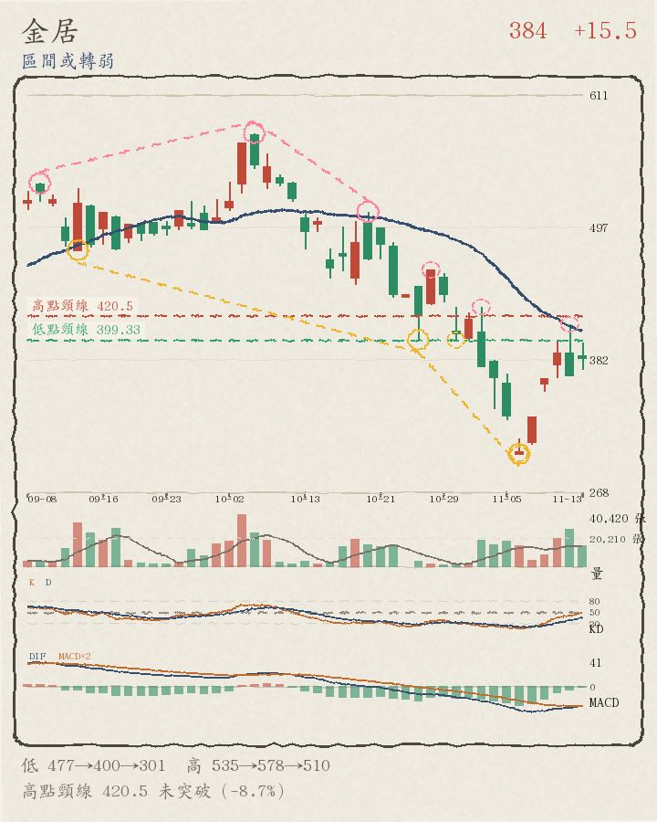
12:31 盤中 384（+4.21%），比加權指數強 2.29 個百分點、跌破月線 411.15，離高點頸線 420.5 還差 8.7%，轉折還沒走出明顯方向。
- 月線位置：現價 384 在月線 411.15 之下（-6.6%）；5 日線 351.8 也在月線之下（短均在下）；月線向下
- 量能：以已過交易時間推估，今天成交量約是 20 日均量的 1.85 倍（爆量），比 20 日均量大不少；上漲又量增，量價配合
- 關鍵價位：高點頸線 420.5 還沒突破，差 8.7%；前一交易日高點 413（低於 7.0%）；今天盤中高點 396.5（低於 3.2%）；今天盤中低點 374（高於 2.7%）
- 轉折結構：低點 477、399.5、301 與高點 535、578、510 都沒有明顯遞增，屬於區間震盪或轉弱；還沒確認的轉折低點 10-30 399.5、11-06 301；還沒確認的轉折高點 11-03 428、11-12 413（圖上虛線小圈）
智邦 2345 上市
1540 +15.0（+0.98%）
區間或轉弱 盤中成交值 59.74 億・全榜第 37 名（上市第 29 名）・相對大盤 -0.94
好條件 1/7：攻擊量（量增＋上漲）
不好條件 4/7：相對大盤弱、在月線之下、貼近今日低點（1% 內）、月線下彎
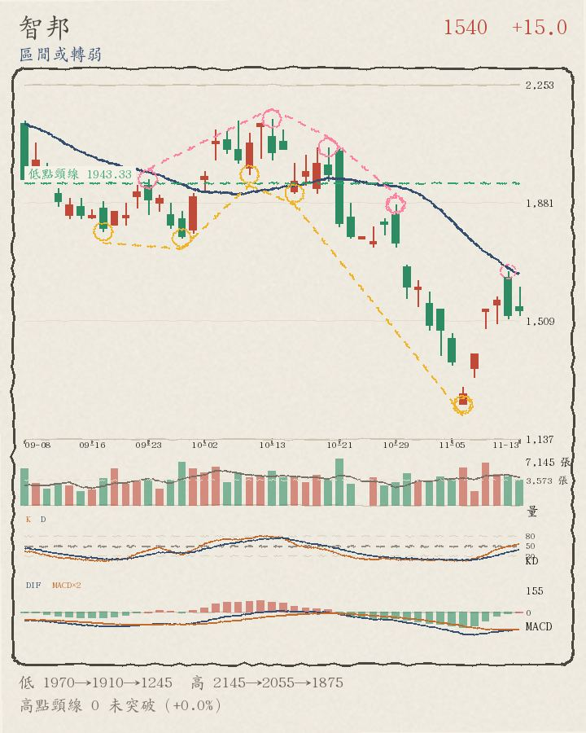
12:31 盤中 1540（+0.98%），比加權指數弱 0.94 個百分點、跌破月線 1675.75，轉折還沒走出明顯方向。
- 月線位置：現價 1540 在月線 1675.75 之下（-8.1%）；5 日線 1466 也在月線之下（短均在下）；月線向下
- 量能：以已過交易時間推估，今天成交量約是 20 日均量的 1.17 倍（量增），比 20 日均量大不少；上漲又量增，量價配合
- 關鍵價位：前一交易日高點 1665（低於 7.5%）；今天盤中高點 1615（低於 4.6%）；今天盤中低點 1525（高於 1.0%）
- 轉折結構：低點 1970、1910、1245 與高點 2145、2055、1875 都沒有明顯遞增，屬於區間震盪或轉弱；還沒確認的轉折低點 11-06 1245；還沒確認的轉折高點 10-29 1875、11-12 1665（圖上虛線小圈）
量增
↑ 回上方清單
緯穎 6669 上市
1645 +75.0（+4.78%）
區間或轉弱 盤中成交值 55.16 億・全榜第 38 名（上市第 30 名）・相對大盤 +2.86
好條件 0/7：無
不好條件 2/7：在月線之下、月線下彎
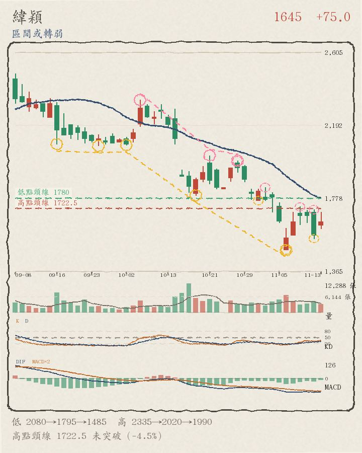
12:31 盤中 1645（+4.78%），比加權指數強 2.86 個百分點、跌破月線 1793.5，離高點頸線 1722.5 還差 4.5%，轉折還沒走出明顯方向。
- 月線位置：現價 1645 在月線 1793.5 之下（-8.3%）；5 日線 1626 也在月線之下（短均在下）；月線向下
- 量能：以已過交易時間推估，今天成交量約是 20 日均量的 0.84 倍（量平），比 20 日均量少很多；上漲但量縮，量價背離
- 關鍵價位：高點頸線 1722.5 還沒突破，差 4.5%；前一交易日高點 1715（低於 4.1%）；今天盤中高點 1700（低於 3.2%）；今天盤中低點 1605（高於 2.5%）
- 轉折結構：低點 2080、1795、1485 與高點 2335、2020、1990 都沒有明顯遞增，屬於區間震盪或轉弱；還沒確認的轉折低點 11-06 1485、11-12 1550；還沒確認的轉折高點 11-10 1730、11-12 1715（圖上虛線小圈）
量平
↑ 回上方清單
高力 8996 上市
1450 +25.0（+1.75%）
區間或轉弱 盤中成交值 55.14 億・全榜第 39 名（上市第 31 名）・相對大盤 -0.17
好條件 1/7：攻擊量（量增＋上漲）
不好條件 3/7：相對大盤弱、在月線之下、月線下彎
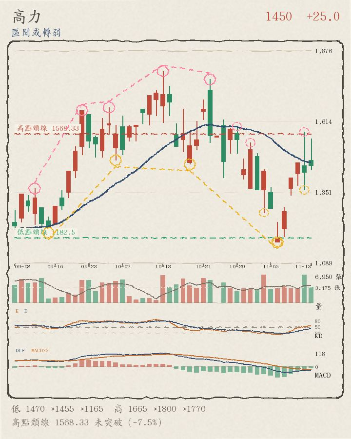
12:31 盤中 1450（+1.75%），比加權指數弱 0.17 個百分點、跌破月線 1465.5，離高點頸線 1568.33 還差 7.5%，轉折還沒走出明顯方向。
- 月線位置：現價 1450 在月線 1465.5 之下（-1.1%）；5 日線 1350 也在月線之下（短均在下）；月線向下
- 量能：以已過交易時間推估，今天成交量約是 20 日均量的 1.17 倍（量增），比 20 日均量大不少；上漲又量增，量價配合
- 關鍵價位：高點頸線 1568.33 還沒突破，差 7.5%；前一交易日高點 1575（低於 7.9%）；今天盤中高點 1550（低於 6.5%）；今天盤中低點 1435（高於 1.0%）
- 轉折結構：低點 1470、1455、1165 與高點 1665、1800、1770 都沒有明顯遞增，屬於區間震盪或轉弱；還沒確認的轉折低點 11-06 1165、11-12 1360；還沒確認的轉折高點 11-02 1535、11-12 1575（圖上虛線小圈）
量增
↑ 回上方清單
禾伸堂 3026 上市
515 +10.0（+1.98%）
區間或轉弱 盤中成交值 53.91 億・全榜第 40 名（上市第 32 名）・相對大盤 +0.06
好條件 1/7：攻擊量（量增＋上漲）
不好條件 2/7：在月線之下、月線下彎
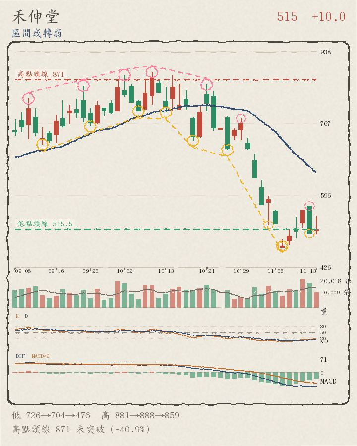
12:31 盤中 515（+1.98%），比加權指數強 0.06 個百分點、跌破月線 663.975，離高點頸線 871 還差 40.9%，轉折還沒走出明顯方向。
- 月線位置：現價 515 在月線 663.975 之下（-22.4%）；5 日線 510.1 也在月線之下（短均在下）；月線向下
- 量能：以已過交易時間推估，今天成交量約是 20 日均量的 1.14 倍（量增），比 20 日均量大一些；上漲又量增，量價配合
- 關鍵價位：高點頸線 871 還沒突破，差 40.9%；前一交易日高點 571（低於 9.8%）；今天盤中高點 548（低於 6.0%）；今天盤中低點 504（高於 2.2%）
- 轉折結構：低點 726、704、475.5 與高點 881、888、859 都沒有明顯遞增，屬於區間震盪或轉弱；還沒確認的轉折低點 11-06 475.5、11-12 505；還沒確認的轉折高點 10-29 778、11-12 571（圖上虛線小圈）
量增
↑ 回上方清單
川湖 2059 上市
7910 -255.0（-3.12%）
區間或轉弱 盤中成交值 51.89 億・全榜第 41 名（上市第 33 名）・相對大盤 -5.04
好條件 0/7：無
不好條件 5/7：今日下跌、相對大盤弱、在月線之下、跌破昨日低點、月線下彎
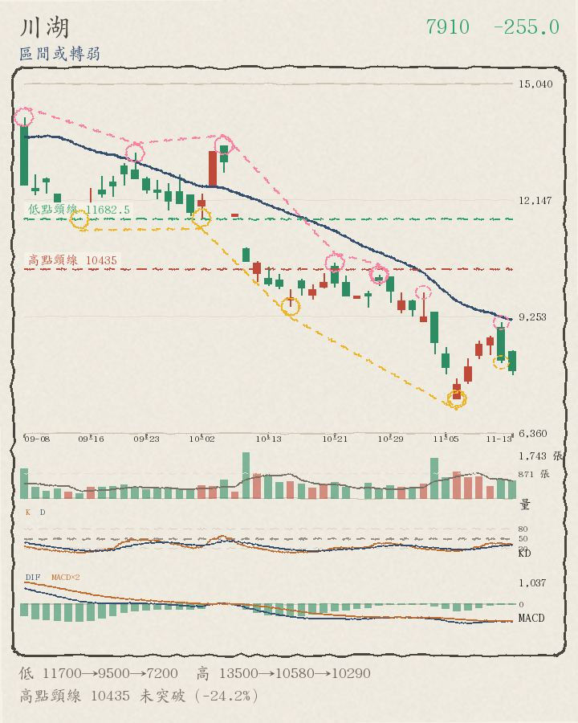
12:31 盤中 7910（-3.12%），比加權指數弱 5.04 個百分點、跌破月線 9253.25，離高點頸線 10435 還差 24.2%，轉折還沒走出明顯方向。
- 月線位置：現價 7910 在月線 9253.25 之下（-14.5%）；5 日線 8207 也在月線之下（短均在下）；月線向下
- 量能：以已過交易時間推估，今天成交量約是 20 日均量的 1.38 倍（量增），比 20 日均量大不少；下跌卻量增，量價背離
- 關鍵價位：高點頸線 10435 還沒突破，差 24.2%；前一交易日高點 9100（低於 13.1%）；今天盤中高點 8410（低於 5.9%）；今天盤中低點 7810（高於 1.3%）
- 轉折結構：低點 11700、9500、7200 與高點 13500、10580、10290 都沒有明顯遞增，屬於區間震盪或轉弱；還沒確認的轉折低點 11-06 7200、11-12 8115；還沒確認的轉折高點 11-03 9850、11-12 9100（圖上虛線小圈）
量增
↑ 回上方清單
聯一光 3441 上櫃
187.5 -9.0（-4.58%）
高點墊高、底部不穩 盤中成交值 51.13 億・全榜第 42 名（上櫃第 9 名）・相對大盤 -6.50
好條件 1/7：頭頭高
不好條件 4/7：今日下跌、相對大盤弱、在月線之下、月線下彎
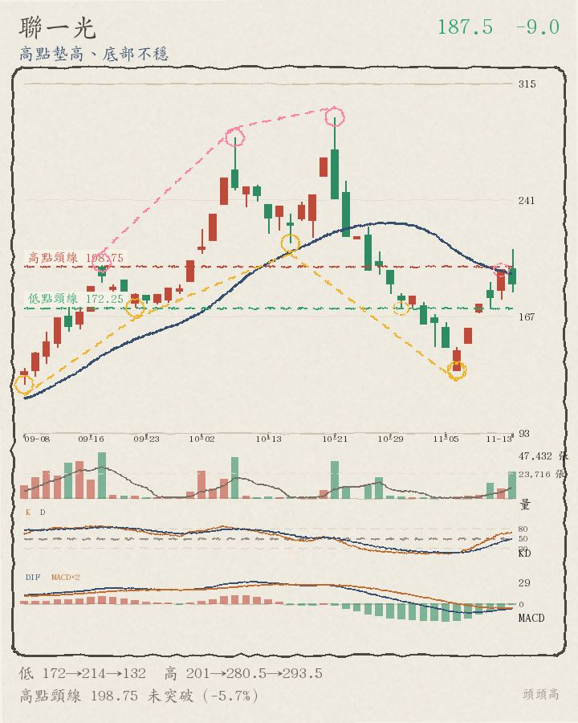
12:31 盤中 187.5（-4.58%），比加權指數弱 6.50 個百分點、跌破月線 195.95，離高點頸線 198.75 還差 5.7%，高點還在墊高（但底部沒同步墊高）。
- 月線位置：現價 187.5 在月線 195.95 之下（-4.3%）；5 日線 171 也在月線之下（短均在下）；月線向下
- 量能：以已過交易時間推估，今天成交量約是 20 日均量的 5.46 倍（爆量），比 20 日均量大不少；下跌卻量增，量價背離
- 關鍵價位：高點頸線 198.75 還沒突破，差 5.7%；前一交易日高點 196.5（低於 4.6%）；今天盤中高點 209.5（低於 10.5%）；今天盤中低點 182.5（高於 2.7%）
- 轉折結構：高點 201、280.5、293.5 墊高（頭頭高），但低點 172.5、213.5、132.5 沒有同步墊高；還沒確認的轉折低點 10-30 172、11-06 132.5；還沒確認的轉折高點 11-12 196.5（圖上虛線小圈）
倉和 6538 上櫃
300.5 -25.5（-7.82%）
區間或轉弱 盤中成交值 48.71 億・全榜第 43 名（上櫃第 10 名）・相對大盤 -9.74
好條件 1/7：站上月線
不好條件 3/7：今日下跌、相對大盤弱、月線下彎

12:31 盤中 300.5（-7.82%），比加權指數弱 9.74 個百分點、站上月線 294.775，離高點頸線 339.12 還差 11.4%，轉折還沒走出明顯方向。
- 月線位置：現價 300.5 在月線 294.775 之上（+1.9%）；5 日線 310.4 也在月線之上（短均在上）；月線向下
- 量能：以已過交易時間推估，今天成交量約是 20 日均量的 5.07 倍（爆量），比 20 日均量大不少；下跌卻量增，量價背離
- 關鍵價位：高點頸線 339.12 還沒突破，差 11.4%；前一交易日高點 338（低於 11.1%）；今天盤中高點 338（低於 11.1%）；今天盤中低點 293.5（高於 2.4%）
- 轉折結構：低點 264.5、270、239.5 與高點 468、334.5、344 都沒有明顯遞增，屬於區間震盪或轉弱；還沒確認的轉折低點 11-06 245.5、11-11 281.5；還沒確認的轉折高點 11-10 340、11-12 338（圖上虛線小圈）
京元電子 2449 上市
215 +1.0（+0.47%）
區間或轉弱 盤中成交值 46.95 億・全榜第 44 名（上市第 34 名）・相對大盤 -1.45
好條件 1/7：攻擊量（量增＋上漲）
不好條件 3/7：相對大盤弱、在月線之下、月線下彎
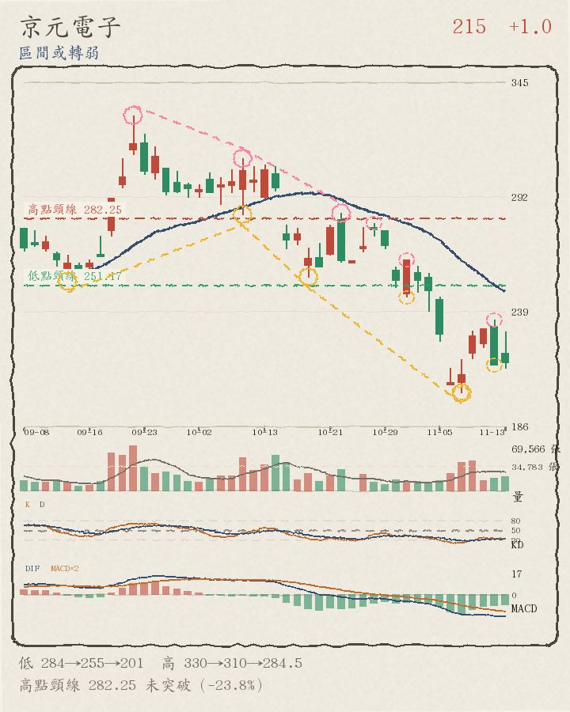
12:31 盤中 215（+0.47%），比加權指數弱 1.45 個百分點、跌破月線 251.2，離高點頸線 282.25 還差 23.8%，轉折還沒走出明顯方向。
- 月線位置：現價 215 在月線 251.2 之下（-14.4%）；5 日線 217.6 也在月線之下（短均在下）；月線向下
- 量能：以已過交易時間推估，今天成交量約是 20 日均量的 1.15 倍（量增），比 20 日均量大不少；上漲又量增，量價配合
- 關鍵價位：高點頸線 282.25 還沒突破，差 23.8%；前一交易日高點 235（低於 8.5%）；今天盤中高點 229.5（低於 6.3%）；今天盤中低點 212.5（高於 1.2%）
- 轉折結構：低點 284、255、201 與高點 330、310、284.5 都沒有明顯遞增，屬於區間震盪或轉弱；還沒確認的轉折低點 11-09 201、11-12 214；還沒確認的轉折高點 11-02 263、11-12 235（圖上虛線小圈）
量增
↑ 回上方清單
騰輝電子-KY 6672 上市
507 +10.0（+2.01%）
高點墊高、底部不穩 盤中成交值 45.5 億・全榜第 45 名（上市第 35 名）・相對大盤 +0.09
好條件 2/7：頭頭高、攻擊量（量增＋上漲）
不好條件 2/7：在月線之下、月線下彎
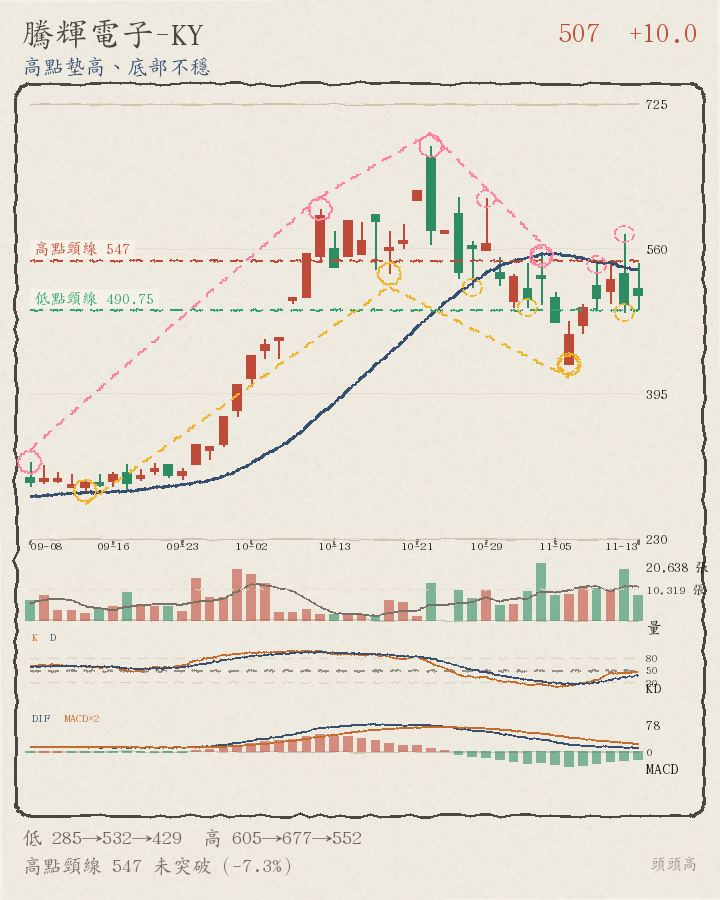
12:31 盤中 507（+2.01%），比加權指數強 0.09 個百分點、跌破月線 539.375，離高點頸線 547 還差 7.3%，高點還在墊高（但底部沒同步墊高）。
- 月線位置：現價 507 在月線 539.375 之下（-6.0%）；5 日線 496.4 也在月線之下（短均在下）；月線向下
- 量能：以已過交易時間推估，今天成交量約是 20 日均量的 1.41 倍（量增），比 20 日均量大不少；上漲又量增，量價配合
- 關鍵價位：高點頸線 547 還沒突破，差 7.3%；前一交易日高點 577（低於 12.1%）；今天盤中高點 543（低於 6.6%）；今天盤中低點 491（高於 3.3%）
- 轉折結構：高點 605、677、552 墊高（頭頭高），但低點 285、532、429 沒有同步墊高；還沒確認的轉折低點 11-06 429、11-12 488；還沒確認的轉折高點 11-10 542、11-12 577（圖上虛線小圈）
環球晶 6488 上櫃
636 +14.0（+2.25%）
區間或轉弱 盤中成交值 43.55 億・全榜第 46 名（上櫃第 11 名）・相對大盤 +0.33
好條件 0/7：無
不好條件 2/7：在月線之下、月線下彎
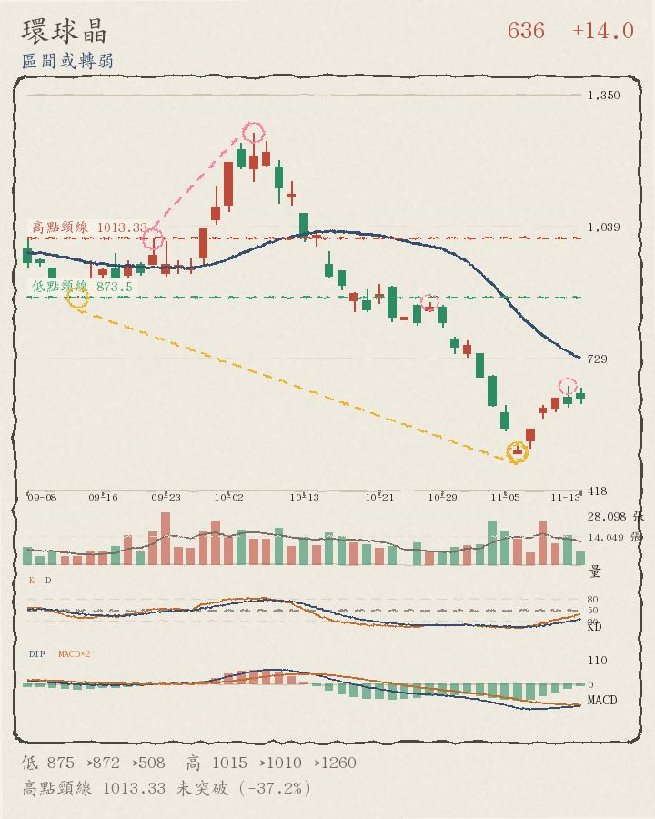
12:31 盤中 636（+2.25%），比加權指數強 0.33 個百分點、跌破月線 744.4，離高點頸線 1013.33 還差 37.2%，轉折還沒走出明顯方向。
- 月線位置：現價 636 在月線 744.4 之下（-14.6%）；5 日線 588.8 也在月線之下（短均在下）；月線向下
- 量能：以已過交易時間推估，今天成交量約是 20 日均量的 0.71 倍（量平），比 20 日均量少很多；上漲但量縮，量價背離
- 關鍵價位：高點頸線 1013.33 還沒突破，差 37.2%；前一交易日高點 663（低於 4.1%）；今天盤中高點 658（低於 3.3%）；今天盤中低點 623（高於 2.1%）
- 轉折結構：低點 875、872、508 與高點 1015、1010、1260 都沒有明顯遞增，屬於區間震盪或轉弱；還沒確認的轉折低點 11-06 508；還沒確認的轉折高點 10-28 860、11-12 663（圖上虛線小圈）
量平
↑ 回上方清單
昇達科 3491 上櫃
1445 -10.0（-0.69%）
高點墊高、底部不穩 盤中成交值 42.76 億・全榜第 47 名（上櫃第 12 名）・相對大盤 -2.61
好條件 2/7：站上月線、頭頭高
不好條件 3/7：今日下跌、相對大盤弱、月線下彎
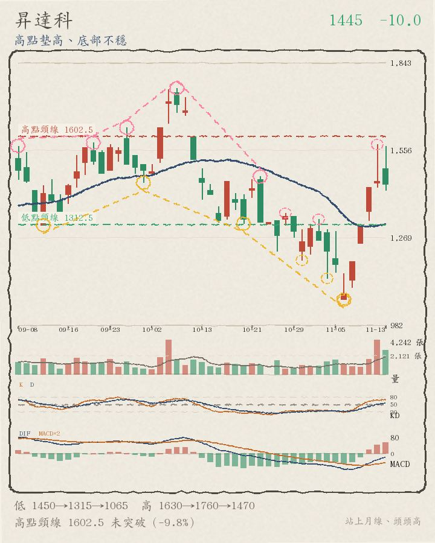
12:31 盤中 1445（-0.69%），比加權指數弱 2.61 個百分點、站上月線 1308，離高點頸線 1602.5 還差 9.8%，高點還在墊高（但底部沒同步墊高）。
- 月線位置：現價 1445 在月線 1308 之上（+10.5%）；5 日線 1294 也在月線之下（短均在下）；月線向下
- 量能：以已過交易時間推估，今天成交量約是 20 日均量的 3.32 倍（爆量），比 20 日均量大不少；下跌卻量增，量價背離
- 關鍵價位：高點頸線 1602.5 還沒突破，差 9.8%；前一交易日高點 1575（低於 8.3%）；今天盤中高點 1570（低於 8.0%）；今天盤中低點 1425（高於 1.4%）
- 轉折結構：高點 1630、1760、1470 墊高（頭頭高），但低點 1450、1315、1065 沒有同步墊高；還沒確認的轉折低點 11-04 1135、11-06 1065；還沒確認的轉折高點 11-03 1330、11-12 1575（圖上虛線小圈）
健鼎 3044 上市
536 +2.0（+0.37%）
高點墊高、底部不穩 盤中成交值 42.44 億・全榜第 48 名（上市第 36 名）・相對大盤 -1.55
好條件 3/7：站上月線、頭頭高、攻擊量（量增＋上漲）
不好條件 2/7：相對大盤弱、月線下彎
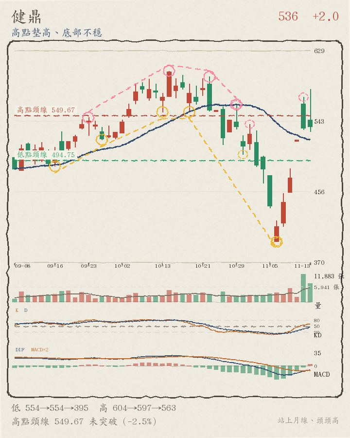
12:31 盤中 536（+0.37%），比加權指數弱 1.55 個百分點、站上月線 522.275，離高點頸線 549.67 還差 2.5%，高點還在墊高（但底部沒同步墊高）。
- 月線位置：現價 536 在月線 522.275 之上（+2.6%）；5 日線 476.9 也在月線之下（短均在下）；月線向下
- 量能：以已過交易時間推估，今天成交量約是 20 日均量的 3.03 倍（爆量），比 20 日均量大不少；上漲又量增，量價配合
- 關鍵價位：高點頸線 549.67 還沒突破，差 2.5%；前一交易日高點 572（低於 6.3%）；今天盤中高點 582（低於 7.9%）；今天盤中低點 530（高於 1.1%）
- 轉折結構：高點 604、597、563 墊高（頭頭高），但低點 554、554、395 沒有同步墊高；還沒確認的轉折低點 10-30 502、11-06 395；還沒確認的轉折高點 11-02 539、11-12 572（圖上虛線小圈）
景碩 3189 上市
655 -12.0（-1.80%）
區間或轉弱 盤中成交值 41.05 億・全榜第 49 名（上市第 37 名）・相對大盤 -3.72
好條件 0/7：無
不好條件 6/7：跌破前低、今日下跌、相對大盤弱、在月線之下、跌破昨日低點、月線下彎
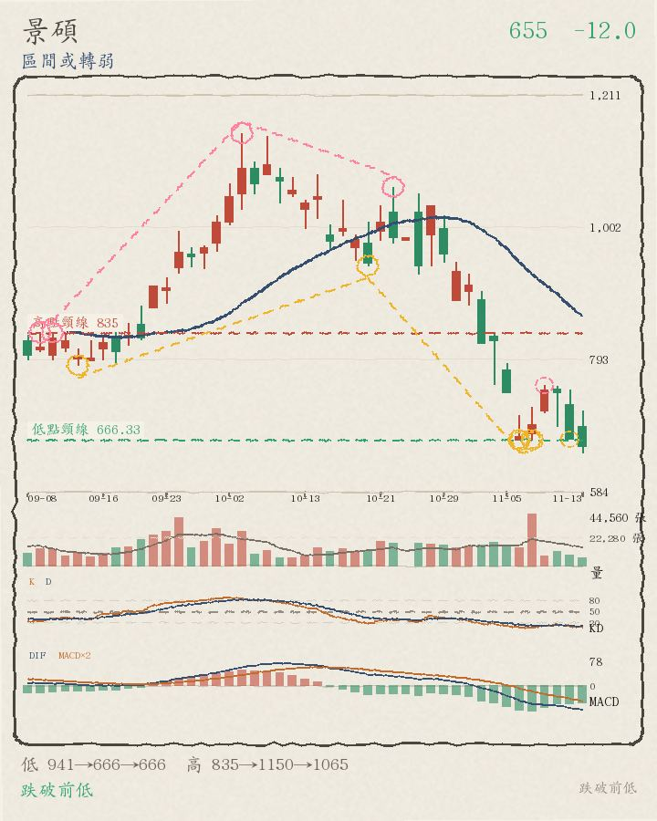
12:31 盤中 655（-1.80%），比加權指數弱 3.72 個百分點、跌破月線 878，離高點頸線 835 還差 21.6%，轉折還沒走出明顯方向。
- 月線位置：現價 655 在月線 878 之下（-25.4%）；5 日線 702.8 也在月線之下（短均在下）；月線向下
- 量能：以已過交易時間推估，今天成交量約是 20 日均量的 0.46 倍（量縮），比 20 日均量少很多
- 關鍵價位：已跌破前一個轉折低點；高點頸線 835 還在現價上方 21.6%；前一交易日高點 745（低於 12.1%）；今天盤中高點 712（低於 8.0%）；今天盤中低點 645（高於 1.6%）
- 轉折結構：低點 941、666、666 與高點 835、1150、1065 都沒有明顯遞增，屬於區間震盪或轉弱；還沒確認的轉折低點 11-09 666、11-12 667；還沒確認的轉折高點 11-10 752（圖上虛線小圈）
華邦電 2344 上市
128 +0.5（+0.39%）
區間或轉弱 盤中成交值 41.01 億・全榜第 50 名（上市第 38 名）・相對大盤 -1.53
好條件 0/7：無
不好條件 3/7：相對大盤弱、在月線之下、月線下彎
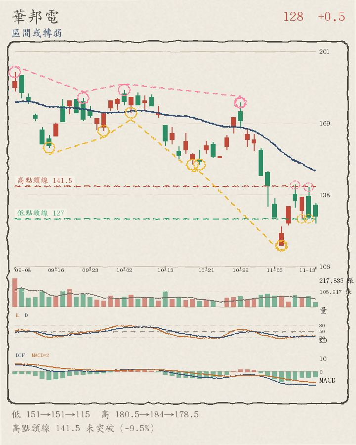
12:31 盤中 128（+0.39%），比加權指數弱 1.53 個百分點、跌破月線 149.6，離高點頸線 141.5 還差 9.5%，轉折還沒走出明顯方向。
- 月線位置：現價 128 在月線 149.6 之下（-14.4%）；5 日線 130.4 也在月線之下（短均在下）；月線向下
- 量能：以已過交易時間推估，今天成交量約是 20 日均量的 0.63 倍（量縮），比 20 日均量少很多；上漲但量縮，量價背離
- 關鍵價位：高點頸線 141.5 還沒突破，差 9.5%；前一交易日高點 141（低於 9.2%）；今天盤中高點 134（低於 4.5%）；今天盤中低點 125（高於 2.4%）
- 轉折結構：低點 151、151、115 與高點 180.5、184、178.5 都沒有明顯遞增，屬於區間震盪或轉弱；還沒確認的轉折低點 11-11 127、11-12 127；還沒確認的轉折高點 11-10 142、11-12 141（圖上虛線小圈）
量縮
↑ 回上方清單
中信金 2891 上市
79.3 +3.9（+5.17%）
區間或轉弱 盤中成交值 40.84 億・全榜第 51 名（上市第 39 名）・相對大盤 +3.25
好條件 5/7：站上月線、月線向上、突破頸線、攻擊量（量增＋上漲）、守住今日高檔（距今日高點 1% 內）
不好條件 0/7：無
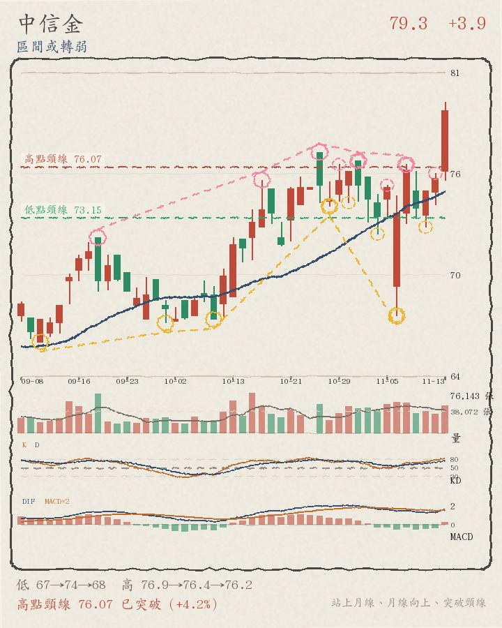
12:31 盤中 79.3（+5.17%），比加權指數強 3.25 個百分點、站上月線 74.34，已突破高點頸線 76.07，轉折還沒走出明顯方向。
- 月線位置：現價 79.3 在月線 74.34 之上（+6.7%）；5 日線 74.62 也在月線之上（短均在上）；月線向上
- 量能：以已過交易時間推估，今天成交量約是 20 日均量的 1.48 倍（量增），比 20 日均量大不少；上漲又量增，量價配合
- 關鍵價位：高點頸線 76.07 已站上；前一交易日高點 75.7（高於 4.8%）；今天盤中高點 79.8（低於 0.6%）；今天盤中低點 75.3（高於 5.3%）
- 轉折結構：低點 67.3、73.8、67.5 與高點 76.9、76.4、76.2 都沒有明顯遞增，屬於區間震盪或轉弱；還沒確認的轉折低點 11-06 67.5、11-11 72.6；還沒確認的轉折高點 11-09 76.2、11-12 75.7（圖上虛線小圈）
群聯 8299 上櫃
1690 +55.0（+3.36%）
區間或轉弱 盤中成交值 39.55 億・全榜第 52 名（上櫃第 13 名）・相對大盤 +1.44
好條件 0/7：無
不好條件 2/7：在月線之下、月線下彎
12:31 盤中 1690（+3.36%），比加權指數強 1.44 個百分點、跌破月線 1802.75，離高點頸線 1762.5 還差 4.1%，轉折還沒走出明顯方向。
- 月線位置：現價 1690 在月線 1802.75 之下（-6.2%）；5 日線 1638 也在月線之下（短均在下）；月線向下
- 量能：以已過交易時間推估，今天成交量約是 20 日均量的 0.94 倍（量平），比 20 日均量少一些
- 關鍵價位：高點頸線 1762.5 還沒突破，差 4.1%；前一交易日高點 1765（低於 4.2%）；今天盤中高點 1740（低於 2.9%）；今天盤中低點 1635（高於 3.4%）
- 轉折結構：低點 1785、1865、1405 與高點 2160、2350、2090 都沒有明顯遞增，屬於區間震盪或轉弱；還沒確認的轉折低點 11-10 1630、11-12 1635；還沒確認的轉折高點 11-10 1760、11-12 1765（圖上虛線小圈）
量平
↑ 回上方清單
玉晶光 3406 上市
1010 +30.0（+3.06%）
區間或轉弱 盤中成交值 39.49 億・全榜第 53 名（上市第 40 名）・相對大盤 +1.14
好條件 0/7：無
不好條件 2/7：在月線之下、月線下彎
12:31 盤中 1010（+3.06%），比加權指數強 1.14 個百分點、跌破月線 1043.6，離高點頸線 1065 還差 5.2%，轉折還沒走出明顯方向。
- 月線位置：現價 1010 在月線 1043.6 之下（-3.2%）；5 日線 909.2 也在月線之下（短均在下）；月線向下
- 量能：以已過交易時間推估，今天成交量約是 20 日均量的 0.63 倍（量縮），比 20 日均量少很多；上漲但量縮，量價背離
- 關鍵價位：高點頸線 1065 還沒突破，差 5.2%；前一交易日高點 1085（低於 6.9%）；今天盤中高點 1075（低於 6.0%）；今天盤中低點 1010（高於 0.0%）
- 轉折結構：低點 1010、1005、762 與高點 1220、1330、1330 都沒有明顯遞增，屬於區間震盪或轉弱；還沒確認的轉折低點 11-06 762；還沒確認的轉折高點 10-29 1330、11-12 1085（圖上虛線小圈）
量縮
↑ 回上方清單
藥華藥 6446 上市
1375 +10.0（+0.73%）
高點墊高、底部不穩 盤中成交值 38.32 億・全榜第 54 名（上市第 41 名）・相對大盤 -1.19
好條件 4/7：站上月線、月線向上、頭頭高、攻擊量（量增＋上漲）
不好條件 2/7：相對大盤弱、貼近今日低點（1% 內）
12:31 盤中 1375（+0.73%），比加權指數弱 1.19 個百分點、站上月線 1228.25，離高點頸線 1400 還差 1.8%，高點還在墊高（但底部沒同步墊高）。
- 月線位置：現價 1375 在月線 1228.25 之上（+11.9%）；5 日線 1324 也在月線之上（短均在上）；月線向上
- 量能：以已過交易時間推估，今天成交量約是 20 日均量的 1.24 倍（量增），比 20 日均量大不少；上漲又量增，量價配合
- 關鍵價位：高點頸線 1400 還沒突破，差 1.8%；前一交易日高點 1410（低於 2.5%）；今天盤中高點 1405（低於 2.1%）；今天盤中低點 1370（高於 0.4%）
- 轉折結構：高點 1235、1300、1255 墊高（頭頭高），但低點 1155、1145、1075 沒有同步墊高；還沒確認的轉折低點 11-06 1075、11-11 1235；還沒確認的轉折高點 11-09 1390、11-12 1410（圖上虛線小圈）
群創 3481 上市
39.9 +1.1（+2.70%）
區間或轉弱 盤中成交值 38.26 億・全榜第 55 名（上市第 42 名）・相對大盤 +0.78
好條件 0/7：無
不好條件 2/7：在月線之下、月線下彎
12:31 盤中 39.9（+2.70%），比加權指數強 0.78 個百分點、跌破月線 43.727，離高點頸線 49.2 還差 18.9%，轉折還沒走出明顯方向。
- 月線位置：現價 39.9 在月線 43.727 之下（-8.8%）；5 日線 38.87 也在月線之下（短均在下）；月線向下
- 量能：以已過交易時間推估，今天成交量約是 20 日均量的 0.96 倍（量平），跟 20 日均量差不多
- 關鍵價位：高點頸線 49.2 還沒突破，差 18.9%；前一交易日高點 43.3（低於 7.9%）；今天盤中高點 41.15（低於 3.0%）；今天盤中低點 39.2（高於 1.8%）
- 轉折結構：低點 48.55、45.65、34.2 與高點 52.2、56.2、49.7 都沒有明顯遞增，屬於區間震盪或轉弱；還沒確認的轉折低點 11-06 34.2、11-12 38.85；還沒確認的轉折高點 11-10 41.4、11-12 43.3（圖上虛線小圈）
量平
↑ 回上方清單
技嘉 2376 上市
283 -6.5（-2.25%）
區間或轉弱 盤中成交值 37.02 億・全榜第 56 名（上市第 43 名）・相對大盤 -4.17
好條件 0/7：無
不好條件 5/7：今日下跌、相對大盤弱、在月線之下、跌破昨日低點、月線下彎
12:31 盤中 283（-2.25%），比加權指數弱 4.17 個百分點、跌破月線 333.875，離高點頸線 368.67 還差 23.2%，轉折還沒走出明顯方向。
- 月線位置：現價 283 在月線 333.875 之下（-15.2%）；5 日線 301.3 也在月線之下（短均在下）；月線向下
- 量能：以已過交易時間推估，今天成交量約是 20 日均量的 3.31 倍（爆量），比 20 日均量大不少；下跌卻量增，量價背離
- 關鍵價位：高點頸線 368.67 還沒突破，差 23.2%；前一交易日高點 304.5（低於 7.1%）；今天盤中高點 295.5（低於 4.2%）；今天盤中低點 277.5（高於 2.0%）
- 轉折結構：低點 358.5、344.5、282 與高點 396.5、363、367 都沒有明顯遞增，屬於區間震盪或轉弱；還沒確認的轉折低點 11-06 282、11-12 288；還沒確認的轉折高點 11-02 342、11-09 319（圖上虛線小圈）
麗臺 2465 上市
158.5 -5.5（-3.35%）
高點墊高、底部不穩 盤中成交值 35.74 億・全榜第 57 名（上市第 44 名）・相對大盤 -5.27
好條件 4/7：站上月線、月線向上、頭頭高、突破頸線
不好條件 3/7：今日下跌、相對大盤弱、跌破昨日低點
12:31 盤中 158.5（-3.35%），比加權指數弱 5.27 個百分點、站上月線 109.2，已突破高點頸線 94.1，高點還在墊高（但底部沒同步墊高）。
- 月線位置：現價 158.5 在月線 109.2 之上（+45.1%）；5 日線 137.3 也在月線之上（短均在上）；月線向上
- 量能：以已過交易時間推估，今天成交量約是 20 日均量的 3.16 倍（爆量），比 20 日均量大不少；下跌卻量增，量價背離
- 關鍵價位：高點頸線 94.1 已站上；前一交易日高點 164（低於 3.4%）；今天盤中高點 173.5（低於 8.6%）；今天盤中低點 154.5（高於 2.6%）
- 轉折結構：高點 107.5、94、94.2 墊高（頭頭高），但低點 87.8、82.2、82.6 沒有同步墊高；還沒確認的轉折低點 10-30 102、11-06 108；還沒確認的轉折高點 11-05 130、11-12 164（圖上虛線小圈）
力旺 3529 上櫃
2370 +165.0（+7.48%）
區間或轉弱 盤中成交值 35.31 億・全榜第 58 名（上櫃第 14 名）・相對大盤 +5.56
好條件 1/7：攻擊量（量增＋上漲）
不好條件 2/7：在月線之下、月線下彎
12:31 盤中 2370（+7.48%），比加權指數強 5.56 個百分點、跌破月線 2392，離高點頸線 2806.67 還差 15.6%，轉折還沒走出明顯方向。
- 月線位置：現價 2370 在月線 2392 之下（-0.9%）；5 日線 2117 也在月線之下（短均在下）；月線向下
- 量能：以已過交易時間推估，今天成交量約是 20 日均量的 2.00 倍（爆量），比 20 日均量大不少；上漲又量增，量價配合
- 關鍵價位：高點頸線 2806.67 還沒突破，差 15.6%；前一交易日高點 2370（高於 0.0%）；今天盤中高點 2425（低於 2.3%）；今天盤中低點 2325（高於 1.9%）
- 轉折結構：低點 2530、2470、1825 與高點 2875、3635、2675 都沒有明顯遞增，屬於區間震盪或轉弱；還沒確認的轉折低點 11-04 2005、11-06 1825；還沒確認的轉折高點 10-29 2675、11-12 2370（圖上虛線小圈）
緯創 3231 上市
171.5 +1.5（+0.88%）
高點墊高、底部不穩 盤中成交值 34.03 億・全榜第 59 名（上市第 45 名）・相對大盤 -1.04
好條件 1/7：頭頭高
不好條件 3/7：相對大盤弱、在月線之下、月線下彎
12:31 盤中 171.5（+0.88%），比加權指數弱 1.04 個百分點、跌破月線 180.3，離高點頸線 183 還差 6.3%，高點還在墊高（但底部沒同步墊高）。
- 月線位置：現價 171.5 在月線 180.3 之下（-4.9%）；5 日線 168.8 也在月線之下（短均在下）；月線向下
- 量能：以已過交易時間推估，今天成交量約是 20 日均量的 0.68 倍（量縮），比 20 日均量少很多；上漲但量縮，量價背離
- 關鍵價位：高點頸線 183 還沒突破，差 6.3%；前一交易日高點 181（低於 5.2%）；今天盤中高點 175（低於 2.0%）；今天盤中低點 169（高於 1.5%）
- 轉折結構：高點 190.5、194.5、199.5 墊高（頭頭高），但低點 182.5、173.5、152 沒有同步墊高；還沒確認的轉折低點 10-30 179.5、11-06 152；還沒確認的轉折高點 11-09 174.5、11-12 181（圖上虛線小圈）
愛普* 6531 上市
723 +46.0（+6.79%）
區間或轉弱 盤中成交值 33.46 億・全榜第 60 名（上市第 46 名）・相對大盤 +4.87
好條件 1/7：攻擊量（量增＋上漲）
不好條件 2/7：在月線之下、月線下彎
12:31 盤中 723（+6.79%），比加權指數強 4.87 個百分點、跌破月線 764.95，離高點頸線 1077.5 還差 32.9%，轉折還沒走出明顯方向。
- 月線位置：現價 723 在月線 764.95 之下（-5.5%）；5 日線 683.2 也在月線之下（短均在下）；月線向下
- 量能：以已過交易時間推估，今天成交量約是 20 日均量的 1.50 倍（爆量），比 20 日均量大不少；上漲又量增，量價配合
- 關鍵價位：高點頸線 1077.5 還沒突破，差 32.9%；前一交易日高點 766（低於 5.6%）；今天盤中高點 744（低於 2.8%）；今天盤中低點 711（高於 1.7%）
- 轉折結構：低點 914、794、584 與高點 1005、1090、885 都沒有明顯遞增，屬於區間震盪或轉弱；還沒確認的轉折低點 11-06 584、11-12 673；還沒確認的轉折高點 10-29 885、11-12 766（圖上虛線小圈）
貿聯-KY 3665 上市
1525 +10.0（+0.66%）
區間或轉弱 盤中成交值 33.03 億・全榜第 61 名（上市第 47 名）・相對大盤 -1.26
好條件 0/7：無
不好條件 4/7：相對大盤弱、在月線之下、貼近今日低點（1% 內）、月線下彎
12:31 盤中 1525（+0.66%），比加權指數弱 1.26 個百分點、跌破月線 1705.75，離高點頸線 1652.5 還差 7.7%，轉折還沒走出明顯方向。
- 月線位置：現價 1525 在月線 1705.75 之下（-10.6%）；5 日線 1474 也在月線之下（短均在下）；月線向下
- 量能：以已過交易時間推估，今天成交量約是 20 日均量的 0.91 倍（量平），比 20 日均量少一些
- 關鍵價位：高點頸線 1652.5 還沒突破，差 7.7%；前一交易日高點 1630（低於 6.4%）；今天盤中高點 1600（低於 4.7%）；今天盤中低點 1510（高於 1.0%）
- 轉折結構：低點 1930、1810、1295 與高點 2375、2685、2080 都沒有明顯遞增，屬於區間震盪或轉弱；還沒確認的轉折低點 11-02 1555、11-09 1295；還沒確認的轉折高點 11-03 1675、11-12 1630（圖上虛線小圈）
量平
↑ 回上方清單
精測 6510 上櫃
3425 +230.0（+7.20%）
高點墊高、底部不穩 盤中成交值 32.81 億・全榜第 62 名（上櫃第 15 名）・相對大盤 +5.28
好條件 4/7：站上月線、頭頭高、突破頸線、攻擊量（量增＋上漲）
不好條件 1/7：月線下彎
12:31 盤中 3425（+7.20%），比加權指數強 5.28 個百分點、站上月線 2904.25，已突破高點頸線 3355，高點還在墊高（但底部沒同步墊高）。
- 月線位置：現價 3425 在月線 2904.25 之上（+17.9%）；5 日線 2776 也在月線之下（短均在下）；月線向下
- 量能：以已過交易時間推估，今天成交量約是 20 日均量的 1.59 倍（爆量），比 20 日均量大不少；上漲又量增，量價配合
- 關鍵價位：高點頸線 3355 已站上；前一交易日高點 3365（高於 1.8%）；今天盤中高點 3505（低於 2.3%）；今天盤中低點 3330（高於 2.9%）
- 轉折結構：高點 3775、3580、3345 墊高（頭頭高），但低點 3000、2825、2250 沒有同步墊高；還沒確認的轉折低點 10-30 2635、11-06 2250；還沒確認的轉折高點 11-02 2980、11-12 3365（圖上虛線小圈）
嘉澤 3533 上市
1910 +170.0（+9.77%）
區間或轉弱 盤中成交值 31.65 億・全榜第 63 名（上市第 48 名）・相對大盤 +7.85
好條件 3/7：站上月線、突破頸線、攻擊量（量增＋上漲）
不好條件 1/7：月線下彎
12:31 盤中 1910（+9.77%），比加權指數強 7.85 個百分點、站上月線 1796.75，已突破高點頸線 1828.75，轉折還沒走出明顯方向。
- 月線位置：現價 1910 在月線 1796.75 之上（+6.3%）；5 日線 1722 也在月線之下（短均在下）；月線向下
- 量能：以已過交易時間推估，今天成交量約是 20 日均量的 1.41 倍（量增），比 20 日均量大不少；上漲又量增，量價配合
- 關鍵價位：高點頸線 1828.75 已站上；前一交易日高點 1865（高於 2.4%）；今天盤中高點 1910（高於 0.0%）；今天盤中低點 1795（高於 6.4%）
- 轉折結構：低點 1820、1770、1495 與高點 1770、2035、2025 都沒有明顯遞增，屬於區間震盪或轉弱；還沒確認的轉折低點 10-30 1730、11-06 1495；還沒確認的轉折高點 11-10 1860、11-12 1865（圖上虛線小圈）
信驊 5274 上櫃
12050 +95.0（+0.79%）
區間或轉弱 盤中成交值 31.45 億・全榜第 64 名（上櫃第 16 名）・相對大盤 -1.13
好條件 0/7：無
不好條件 4/7：跌破前低、相對大盤弱、在月線之下、月線下彎
12:31 盤中 12050（+0.79%），比加權指數弱 1.13 個百分點、跌破月線 14782.2，轉折還沒走出明顯方向。
- 月線位置：現價 12050 在月線 14782.2 之下（-18.5%）；5 日線 11904 也在月線之下（短均在下）；月線向下
- 量能：以已過交易時間推估，今天成交量約是 20 日均量的 0.78 倍（量平），比 20 日均量少很多；上漲但量縮，量價背離
- 關鍵價位：前一交易日高點 13375（低於 9.9%）；今天盤中高點 12880（低於 6.4%）；今天盤中低點 11795（高於 2.2%）
- 轉折結構：低點 17170、15975、15500 與高點 19895、18465、17490 都沒有明顯遞增，屬於區間震盪或轉弱；還沒確認的轉折低點 11-10 10710、11-12 11830；還沒確認的轉折高點 11-09 11990、11-12 13375（圖上虛線小圈）
力積電 6770 上市
57.4 +1.3（+2.32%）
區間或轉弱 盤中成交值 31.32 億・全榜第 65 名（上市第 49 名）・相對大盤 +0.40
好條件 0/7：無
不好條件 2/7：在月線之下、月線下彎
12:31 盤中 57.4（+2.32%），比加權指數強 0.40 個百分點、跌破月線 63.16，離高點頸線 74.33 還差 22.8%，轉折還沒走出明顯方向。
- 月線位置：現價 57.4 在月線 63.16 之下（-9.1%）；5 日線 56.96 也在月線之下（短均在下）；月線向下
- 量能：以已過交易時間推估，今天成交量約是 20 日均量的 0.64 倍（量縮），比 20 日均量少很多；上漲但量縮，量價背離
- 關鍵價位：高點頸線 74.33 還沒突破，差 22.8%；前一交易日高點 60.4（低於 5.0%）；今天盤中高點 58.5（低於 1.9%）；今天盤中低點 56.5（高於 1.6%）
- 轉折結構：低點 70.5、63、49.35 與高點 74.7、78.1、73 都沒有明顯遞增，屬於區間震盪或轉弱；還沒確認的轉折低點 11-06 49.35、11-11 55.9；還沒確認的轉折高點 11-10 63、11-12 60.4（圖上虛線小圈）
量縮
↑ 回上方清單
光聖 6442 上市
1170 +70.0（+6.36%）
區間或轉弱 盤中成交值 31.23 億・全榜第 66 名（上市第 50 名）・相對大盤 +4.44
好條件 1/7：攻擊量（量增＋上漲）
不好條件 2/7：在月線之下、月線下彎
12:31 盤中 1170（+6.36%），比加權指數強 4.44 個百分點、跌破月線 1287.75，離高點頸線 1207.5 還差 3.1%，轉折還沒走出明顯方向。
- 月線位置：現價 1170 在月線 1287.75 之下（-9.1%）；5 日線 1103 也在月線之下（短均在下）；月線向下
- 量能：以已過交易時間推估，今天成交量約是 20 日均量的 2.03 倍（爆量），比 20 日均量大不少；上漲又量增，量價配合
- 關鍵價位：高點頸線 1207.5 還沒突破，差 3.1%；前一交易日高點 1215（低於 3.7%）；今天盤中高點 1210（低於 3.3%）；今天盤中低點 1135（高於 3.1%）
- 轉折結構：低點 1495、1465、963 與高點 1695、1920、1815 都沒有明顯遞增，屬於區間震盪或轉弱；還沒確認的轉折低點 11-06 963、11-12 1095；還沒確認的轉折高點 11-10 1200、11-12 1215（圖上虛線小圈）
頎邦 6147 上櫃
172 +4.5（+2.69%）
區間或轉弱 盤中成交值 26.69 億・全榜第 67 名（上櫃第 17 名）・相對大盤 +0.77
好條件 0/7：無
不好條件 3/7：在月線之下、貼近今日低點（1% 內）、月線下彎
12:31 盤中 172（+2.69%），比加權指數強 0.77 個百分點、跌破月線 189.225，離高點頸線 220 還差 21.8%，轉折還沒走出明顯方向。
- 月線位置：現價 172 在月線 189.225 之下（-9.1%）；5 日線 161.5 也在月線之下（短均在下）；月線向下
- 量能：以已過交易時間推估，今天成交量約是 20 日均量的 0.83 倍（量平），比 20 日均量少很多；上漲但量縮，量價背離
- 關鍵價位：高點頸線 220 還沒突破，差 21.8%；前一交易日高點 180（低於 4.4%）；今天盤中高點 177（低於 2.8%）；今天盤中低點 170.5（高於 0.9%）
- 轉折結構：低點 211、194.5、142 與高點 238、217、223 都沒有明顯遞增，屬於區間震盪或轉弱；還沒確認的轉折低點 11-06 142；還沒確認的轉折高點 10-28 223、11-12 180（圖上虛線小圈）
量平
↑ 回上方清單
營邦 3693 上櫃
723 +36.0（+5.24%）
高點墊高、底部不穩 盤中成交值 23.06 億・全榜第 68 名（上櫃第 18 名）・相對大盤 +3.32
好條件 3/7：站上月線、頭頭高、攻擊量（量增＋上漲）
不好條件 1/7：月線下彎
12:31 盤中 723（+5.24%），比加權指數強 3.32 個百分點、站上月線 644.3，離高點頸線 729 還差 0.8%，高點還在墊高（但底部沒同步墊高）。
- 月線位置：現價 723 在月線 644.3 之上（+12.2%）；5 日線 613.2 也在月線之下（短均在下）；月線向下
- 量能：以已過交易時間推估，今天成交量約是 20 日均量的 2.38 倍（爆量），比 20 日均量大不少；上漲又量增，量價配合
- 關鍵價位：高點頸線 729 還沒突破，差 0.8%；前一交易日高點 739（低於 2.2%）；今天盤中高點 748（低於 3.3%）；今天盤中低點 705（高於 2.6%）
- 轉折結構：高點 719、748、789 墊高（頭頭高），但低點 691、647、489 沒有同步墊高；還沒確認的轉折低點 11-06 489、11-11 620；還沒確認的轉折高點 11-04 608、11-12 739（圖上虛線小圈）
漢測 7856 上櫃
2570 -200.0（-7.22%）
區間或轉弱 盤中成交值 17.06 億・全榜第 69 名（上櫃第 19 名）・相對大盤 -9.14
好條件 0/7：無
不好條件 5/7：今日下跌、相對大盤弱、在月線之下、跌破昨日低點、月線下彎
12:31 盤中 2570（-7.22%），比加權指數弱 9.14 個百分點、跌破月線 3086.75，轉折還沒走出明顯方向。
- 月線位置：現價 2570 在月線 3086.75 之下（-16.7%）；5 日線 2549 也在月線之下（短均在下）；月線向下
- 量能：以已過交易時間推估，今天成交量約是 20 日均量的 2.11 倍（爆量），比 20 日均量大不少；下跌卻量增，量價背離
- 關鍵價位：前一交易日高點 3030（低於 15.2%）；今天盤中高點 2945（低於 12.7%）；今天盤中低點 2520（高於 2.0%）
- 轉折結構：低點 3155、2270、2270 與高點 5445、4630、3750 都沒有明顯遞增，屬於區間震盪或轉弱；還沒確認的轉折低點 11-06 2270、11-09 2270；還沒確認的轉折高點 10-29 3595、11-12 3030（圖上虛線小圈）
華星光 4979 上櫃
381 +6.0（+1.60%）
區間或轉弱 盤中成交值 16.52 億・全榜第 70 名（上櫃第 20 名）・相對大盤 -0.32
好條件 0/7：無
不好條件 3/7：相對大盤弱、在月線之下、月線下彎
12:31 盤中 381（+1.60%），比加權指數弱 0.32 個百分點、跌破月線 431.575，離高點頸線 654 還差 41.7%，轉折還沒走出明顯方向。
- 月線位置：現價 381 在月線 431.575 之下（-11.7%）；5 日線 363.9 也在月線之下（短均在下）；月線向下
- 量能：以已過交易時間推估，今天成交量約是 20 日均量的 1.02 倍（量平），跟 20 日均量差不多
- 關鍵價位：高點頸線 654 還沒突破，差 41.7%；前一交易日高點 410.5（低於 7.2%）；今天盤中高點 396（低於 3.8%）；今天盤中低點 376（高於 1.3%）
- 轉折結構：低點 545、445、312 與高點 622、588、531 都沒有明顯遞增，屬於區間震盪或轉弱；還沒確認的轉折低點 11-06 312；還沒確認的轉折高點 10-29 531、11-12 410.5（圖上虛線小圈）
量平
↑ 回上方清單
← 回股市觀察